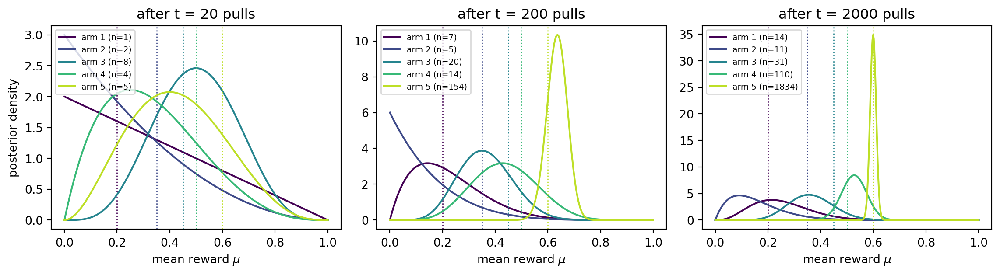
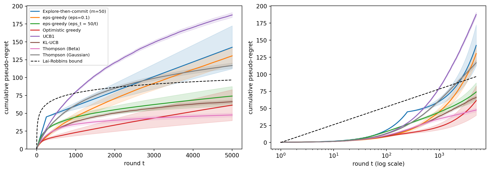
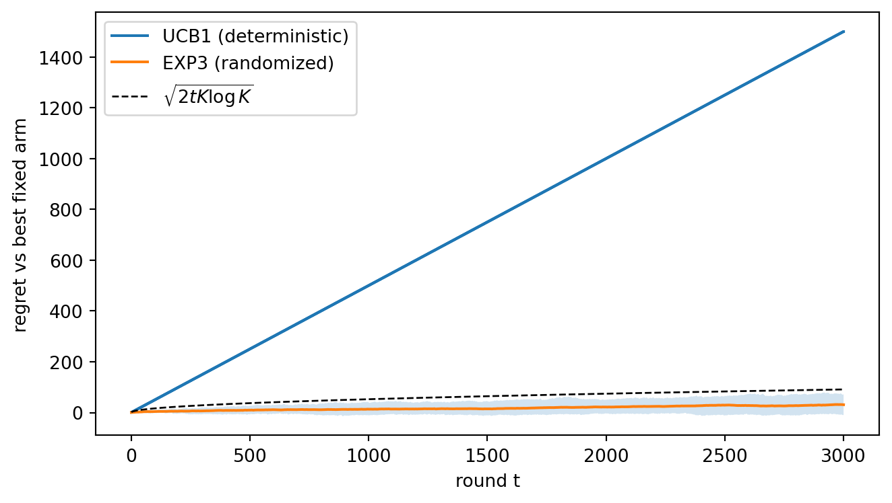
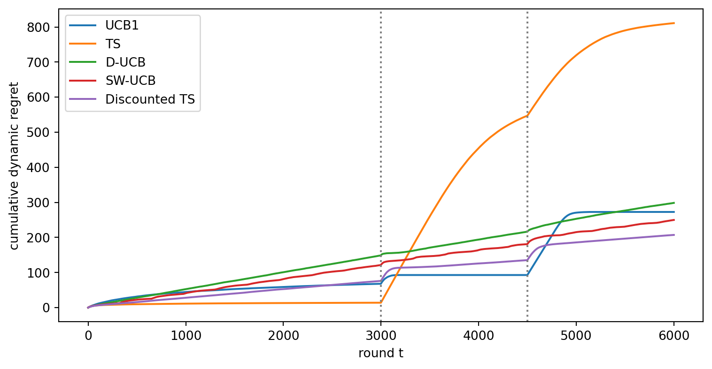
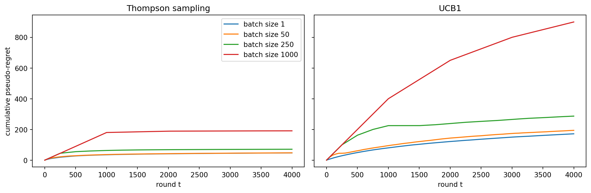

Every system that learns from its own decisions faces the same dilemma. A news site can show the headline that has performed best so far, or it can show a newer headline that might be better but has little data behind it. A clinical trial can give the next patient the treatment that currently looks most effective, or it can keep randomizing to learn more. A model router can send the next prompt to the language model that has answered well so far, or it can occasionally try a cheaper one. Choosing the apparent best option is exploitation. Choosing an uncertain option to learn about it is exploration. Too much exploitation locks in an early mistake forever. Too much exploration wastes traffic on options that are already known to be poor.
The multi-armed bandit is the cleanest mathematical model of this tradeoff. The name comes from a row of slot machines (“one-armed bandits”), each paying out according to an unknown distribution, and a gambler who must decide which lever to pull next. In the language of reinforcement learning, a bandit is a Markov decision process with a single state: actions earn rewards but never change the situation the agent is in. That simplification removes credit assignment over time and leaves the exploration problem in its purest form. Full sequential decision problems, where actions move the agent between states, are the subject of Chapter 255. When each decision comes with side information such as a user profile, the problem becomes a contextual bandit, which Chapter 254 develops together with the closely related problem of evaluating a policy from logged data.
This chapter opens the part of the book on reinforcement learning and sequential decisions. We define the stochastic \(K\)-armed bandit, measure performance by regret, and establish what no algorithm can beat. We then build the main algorithm families (explore-then-commit, \(\varepsilon\)-greedy, optimistic initialization, UCB1, KL-UCB, and Thompson sampling) from scratch, compare them in one simulation, and move to the settings that matter in practice: adversarial rewards, best-arm identification, drifting environments, batched and delayed feedback, and inference after adaptive data collection. An R treatment of the core algorithms appears in Advanced Data Analysis. The standard book-length references are Lattimore and Szepesvári (2020) and Slivkins (2019).
253.1 The Stochastic K-Armed Bandit
The stochastic bandit has \(K\) arms. Arm \(a \in \{1, \dots, K\}\) has an unknown reward distribution \(P_a\) with mean \(\mu_a\). At each round \(t = 1, \dots, T\) the learner chooses an arm \(A_t\) using only the history \(H_{t-1} = (A_1, X_1, \dots, A_{t-1}, X_{t-1})\) and then observes a reward \(X_t \sim P_{A_t}\), drawn independently of everything else. Crucially, the learner sees the reward of the chosen arm only. The rewards the other arms would have paid are never revealed. This is bandit feedback, and it is what separates the problem from supervised learning, where every label is observed regardless of what the model predicted.
Write \(\mu^* = \max_a \mu_a\) for the best mean and \(\Delta_a = \mu^* - \mu_a\) for the gap of arm \(a\). The natural running estimate is the sample mean \[
\hat\mu_a(t) = \frac{1}{N_a(t)} \sum_{s \le t \,:\, A_s = a} X_s ,
\qquad
N_a(t) = \sum_{s=1}^{t} \mathbb{1}[A_s = a],
\] where \(N_a(t)\) counts how often arm \(a\) has been pulled. Every algorithm in this chapter is a rule for turning \((\hat\mu_a, N_a)\) into the next choice. They differ only in how they treat the uncertainty in \(\hat\mu_a\), which shrinks like \(1/\sqrt{N_a}\).
Bernoulli rewards (click or no click, reply or no reply, conversion or not) are the workhorse case and the one we simulate. Everything extends to bounded or sub-Gaussian rewards with minor changes to the confidence widths.
253.2 Regret: Keeping Score
A policy that knew the means would pull the best arm every round and collect \(T\mu^*\) in expectation. The regret of a learning policy is the expected shortfall relative to that oracle: \[
R_T = T\mu^* - \mathbb{E}\Big[\sum_{t=1}^{T} X_t\Big]
= \sum_{a=1}^{K} \Delta_a \, \mathbb{E}[N_a(T)] .
\] The second form, the regret decomposition, follows from the tower rule and is the key to every analysis. Regret is a weighted count of mistakes: each pull of arm \(a\) costs \(\Delta_a\). Bounding regret therefore reduces to bounding how often each suboptimal arm is pulled.
A policy that never explores can lock onto a suboptimal arm with positive probability and suffer linear regret, \(R_T = \Omega(T)\). A policy that explores at a constant rate also suffers linear regret, because it keeps paying for exploration long after the answer is known. The goal is sublinear regret, \(R_T / T \to 0\), which means the per-round loss vanishes.
253.2.1 What no algorithm can beat
Lai and Robbins (1985) proved that sublinear regret has a floor. For any policy that is consistent (its regret is \(o(T^\alpha)\) for every \(\alpha > 0\) on every instance), each suboptimal arm must be pulled at least logarithmically often: \[
\liminf_{T \to \infty} \frac{\mathbb{E}[N_a(T)]}{\log T} \ \ge\ \frac{1}{\mathrm{KL}(P_a, P_{a^*})},
\qquad\text{hence}\qquad
\liminf_{T \to \infty} \frac{R_T}{\log T} \ \ge\ \sum_{a : \Delta_a > 0} \frac{\Delta_a}{\mathrm{KL}(P_a, P_{a^*})} .
\] For Bernoulli arms the divergence is \(\mathrm{kl}(p, q) = p \log\frac{p}{q} + (1-p)\log\frac{1-p}{1-q}\). The intuition is a hypothesis-testing argument. To be confident that arm \(a\) is not secretly the best, the learner must collect enough samples to distinguish \(P_a\) from a perturbed version whose mean exceeds \(\mu^*\), and the sample size needed for that test scales with \(\log T / \mathrm{KL}\). Arms that look similar to the best one (small KL) are expensive to rule out.
The Lai-Robbins bound is instance-dependent and grows like \(\log T\). There is also a minimax (worst-case) bound: for any algorithm there is an instance with \(R_T \ge c\sqrt{KT}\), achieved by gaps of order \(\sqrt{K/T}\) that are too small to detect yet large enough to cost. Good algorithms match both rates up to constants. We will draw the Lai-Robbins line on the regret plot so the curves can be compared with the best achievable asymptotic slope.
253.3 Explore-Then-Commit
The simplest strategy is the one a classical A/B test implements. Pull every arm \(m\) times, then commit forever to the arm with the highest sample mean. With \(K = 2\) and gap \(\Delta\), the commit step picks the wrong arm with probability at most \(\exp(-m\Delta^2/4)\) by Hoeffding’s inequality, so \[
R_T \ \le\ m\Delta + T\Delta\exp\!\big(-m\Delta^2/4\big).
\] Optimizing over \(m\) gives \(m \approx \frac{4}{\Delta^2}\log\frac{T\Delta^2}{4}\) and logarithmic regret. The catch is that the optimal \(m\) depends on \(\Delta\), which is exactly what we do not know. Choose \(m\) too small and the commitment is often wrong (linear regret). Choose it too large and the exploration phase is wasteful. Explore-then-commit is still useful as a baseline, and it is the right model of a fixed-horizon A/B test followed by a launch decision.
253.4 Epsilon-Greedy
\(\varepsilon\)-greedy interleaves exploration with exploitation. At each round, with probability \(\varepsilon\) pull an arm uniformly at random, and otherwise pull the arm with the highest sample mean. It is trivial to implement and appears everywhere in practice. With a fixed \(\varepsilon\) it explores forever, so each suboptimal arm is pulled about \(\varepsilon T/K\) times and regret is linear. Auer, Cesa-Bianchi, and Fischer (2002) showed that a decaying schedule \(\varepsilon_t \propto 1/t\) recovers logarithmic regret, though the constant in the schedule again depends on the unknown smallest gap. The deeper weakness is that exploration is undirected. A random exploration pull is as likely to go to an arm that is clearly terrible as to one that is nearly tied with the leader.
253.5 Optimistic Initialization
A different way to force early exploration is to start every estimate high. Initialize each arm as if it had already produced \(n_0\) rewards equal to the maximum possible value and then act greedily. Each pull of an untried arm disappoints, its estimate drops, and the greedy rule moves on to an arm that still looks good. Sutton and Barto (2018) present this as a simple exploration device. With \(n_0\) optimistic pseudo-observations the estimate is \((S_a + n_0)/(N_a + n_0)\), so the optimism decays like \(n_0/N_a\). That is faster than the statistical uncertainty, which decays like \(1/\sqrt{N_a}\), so the method eventually behaves greedily and carries no guarantee against locking in after an unlucky start. How well it works depends on whether \(n_0\) happens to suit the gaps of the problem at hand. It is a useful heuristic and a bridge to the principled version of the same idea, which keeps the optimism alive in proportion to the remaining uncertainty.
253.6 Upper Confidence Bounds
The principle of optimism in the face of uncertainty says to act as if each arm were as good as is plausibly consistent with the data. Concretely, compute an upper confidence bound for each mean and pull the arm with the highest bound. An arm can have a high bound for two reasons: its sample mean is high (exploitation), or it has been pulled rarely so its interval is wide (exploration). Exploration is now directed at the arms whose value is genuinely uncertain, and an arm that is clearly poor stops being pulled once its bound falls below the leader’s mean.
253.6.1 UCB1
For rewards in \([0, 1]\), Hoeffding’s inequality gives \(P\big(\mu_a > \hat\mu_a + \sqrt{2\log(1/\delta)/(2N_a)}\big) \le \delta\). Setting the failure probability to shrink polynomially in \(t\) yields the UCB1 index of Auer, Cesa-Bianchi, and Fischer (2002): \[
\mathrm{UCB}_a(t) = \hat\mu_a(t-1) + \sqrt{\frac{2\log t}{N_a(t-1)}} ,
\qquad
A_t = \arg\max_a \mathrm{UCB}_a(t),
\] after pulling each arm once. The \(\log t\) in the numerator makes the bonus grow slowly for arms that are not being pulled, so no arm is abandoned forever, while the \(N_a\) in the denominator shrinks the bonus for well-sampled arms. A suboptimal arm is pulled only while its bonus is larger than about \(\Delta_a\), which happens for \(N_a \lesssim 8\log T / \Delta_a^2\) rounds, so \[
R_T \ \le\ \sum_{a : \Delta_a > 0} \frac{8 \log T}{\Delta_a} + \Big(1 + \frac{\pi^2}{3}\Big)\sum_a \Delta_a .
\] This is logarithmic and needs no knowledge of the gaps. The constant is not optimal, though. Since \(\mathrm{kl}(\mu_a, \mu^*) \ge 2\Delta_a^2\), the Lai-Robbins coefficient \(\Delta_a / \mathrm{kl}\) is at most \(1/(2\Delta_a)\), which is far smaller than \(8/\Delta_a\), and for means near 0 or 1 the gap between Hoeffding and the true KL geometry is large.
253.6.2 KL-UCB
KL-UCB (Garivier and Cappé, 2011) replaces the Hoeffding interval with one built from the Bernoulli KL divergence itself: \[
\mathrm{KLUCB}_a(t) = \max\Big\{ q \in [\hat\mu_a, 1] \ :\ N_a(t-1)\,\mathrm{kl}\big(\hat\mu_a(t-1), q\big) \le \log t + c\log\log t \Big\}.
\] The index has no closed form, but \(\mathrm{kl}(\hat\mu, q)\) is increasing in \(q\) above \(\hat\mu\), so a few steps of bisection find it. KL-UCB matches the Lai-Robbins constant for Bernoulli rewards. The interval is tighter than Hoeffding’s when the mean is near the boundary, which is the typical regime for click-through and conversion rates measured in percent.
253.7 Thompson Sampling
Thompson sampling (Thompson, 1933) takes a Bayesian route. Maintain a posterior over each arm’s mean, draw one sample from each posterior, and pull the arm whose sample is largest. Formally the chosen arm satisfies \[
P(A_t = a \mid H_{t-1}) = P\big(a = \arg\max_b \mu_b \,\big|\, H_{t-1}\big),
\] so each arm is played with exactly the posterior probability that it is the best. This is probability matching. An arm that is probably bad is rarely sampled, an arm whose posterior is wide sometimes produces a large draw and is explored, and as posteriors concentrate the method becomes greedy on its own. There is no tuning parameter apart from the prior.
253.7.1 Beta-Bernoulli
With Bernoulli rewards and a \(\mathrm{Beta}(\alpha_0, \beta_0)\) prior, conjugacy gives a closed-form posterior. After \(S_a\) successes in \(N_a\) pulls, \[
\mu_a \mid H_{t-1} \sim \mathrm{Beta}\big(\alpha_0 + S_a,\ \beta_0 + N_a - S_a\big).
\] The uniform prior \(\alpha_0 = \beta_0 = 1\) is standard. The update is two counters per arm, which is why Thompson sampling is so popular in production. Kaufmann, Korda, and Munos (2012) and Agrawal and Goyal (2017) proved that Beta-Bernoulli Thompson sampling attains the Lai-Robbins bound, and Chapelle and Li (2011) showed empirically, on display-advertising and news data, that it is competitive with or better than UCB variants.
253.7.2 Gaussian
For real-valued rewards with known noise variance \(\sigma^2\) and a Gaussian prior, the posterior is Gaussian too. With a flat prior it is centered at the sample mean with variance \(\sigma^2/N_a\). Agrawal and Goyal (2017) analyze a version that uses \(\mathcal{N}\big(\hat\mu_a, 1/(N_a + 1)\big)\) as the sampling distribution even for bounded rewards that are not Gaussian, and show near-optimal regret. The Gaussian form is the natural choice for continuous rewards such as revenue or watch time, and it is the building block of the linear Thompson sampling in Chapter 254. Russo et al. (2018) give a broad tutorial covering both cases and many extensions.
Figure 253.1 follows the Beta posteriors of a single run. Early on the posteriors are wide and overlapping, so every arm gets sampled. Later the best arm’s posterior is narrow and dominant, while the clearly inferior arms are left with wide posteriors that no longer matter because they are almost never drawn as the maximum. Thompson sampling spends samples to resolve only the comparisons that affect the decision.
Code
import numpy as npimport pandas as pdimport matplotlib.pyplot as pltfrom scipy import statspd.set_option("display.width", 120)MU = np.array([0.20, 0.35, 0.45, 0.50, 0.60]) # true Bernoulli means, arm 5 bestK =len(MU)COLORS = plt.cm.viridis(np.linspace(0, 0.9, K))rng = np.random.default_rng(621)S, N = np.zeros(K), np.zeros(K)snapshots, checkpoints = {}, [20, 200, 2000]for t inrange(1, max(checkpoints) +1): a =int(np.argmax(rng.beta(S +1, N - S +1))) S[a] += rng.random() < MU[a] N[a] +=1if t in checkpoints: snapshots[t] = (S.copy(), N.copy())grid = np.linspace(0, 1, 400)fig, axes = plt.subplots(1, 3, figsize=(12, 3.4), sharey=False)for ax, t inzip(axes, checkpoints): s, n = snapshots[t]for a inrange(K): ax.plot(grid, stats.beta.pdf(grid, s[a] +1, n[a] - s[a] +1), color=COLORS[a], label=f"arm {a+1} (n={int(n[a])})") ax.axvline(MU[a], color=COLORS[a], ls=":", lw=1) ax.set_title(f"after t = {t} pulls") ax.set_xlabel(r"mean reward $\mu$") ax.legend(fontsize=7, loc="upper left")axes[0].set_ylabel("posterior density")plt.tight_layout()plt.show()

Figure 253.1: Beta posteriors of five Bernoulli arms under Thompson sampling at three points in one run. Dotted lines mark the true means. Posteriors of poor arms stay wide because they are rarely chosen.
253.8 Comparing the Algorithms
We now put every stochastic algorithm into one simulation. The environment has five Bernoulli arms with means 0.20, 0.35, 0.45, 0.50, and 0.60, so the best arm leads the runner-up by 0.10. Each policy runs for \(T = 5000\) rounds, and we average over 200 independent replications. To reduce noise we track pseudo-regret, \(\sum_t \Delta_{A_t}\), whose expectation equals \(R_T\). The simulation is vectorized across replications, so each round updates a \(200 \times 5\) array of counts rather than looping over runs.
Code
def bern_kl(p, q, eps=1e-12): p = np.clip(p, eps, 1- eps) q = np.clip(q, eps, 1- eps)return p * np.log(p / q) + (1- p) * np.log((1- p) / (1- q))def kl_ucb_index(mean, n, t, iters=16):"""Vectorized bisection for max{q : n * kl(mean, q) <= log t}.""" lo, hi = mean.copy(), np.ones_like(mean) bound = np.log(max(t, 2)) / nfor _ inrange(iters): mid = (lo + hi) /2 too_far = bern_kl(mean, mid) > bound hi = np.where(too_far, mid, hi) lo = np.where(too_far, lo, mid)return lodef run_bandit(policy, mu, T=5000, R=200, seed=0):"""Simulate a policy on Bernoulli arms for R parallel runs. policy(t, N, S, rng, state) returns an array of R arm indices.""" rng = np.random.default_rng(seed) K =len(mu) N, S = np.zeros((R, K)), np.zeros((R, K)) gaps = mu.max() - mu regret = np.zeros((R, T)) rows, cum, state = np.arange(R), np.zeros(R), {}for t inrange(T): a = policy(t, N, S, rng, state) r = (rng.random(R) < mu[a]).astype(float) N[rows, a] +=1 S[rows, a] += r cum += gaps[a] regret[:, t] = cumreturn regret, Ndef greedy_arm(values, rng):return np.argmax(values +1e-9* rng.random(values.shape), axis=1)def explore_then_commit(m):def pol(t, N, S, rng, st): R, K = N.shapeif t < m * K:return np.full(R, t % K)if"commit"notin st: st["commit"] = greedy_arm(S / N, rng)return st["commit"]return poldef eps_greedy(eps=None, schedule=None):def pol(t, N, S, rng, st): R, K = N.shapeif t < K:return np.full(R, t) e = eps if schedule isNoneelsemin(1.0, schedule / t) explore = rng.random(R) < ereturn np.where(explore, rng.integers(0, K, R), greedy_arm(S / N, rng))return poldef optimistic_greedy(n0=5):def pol(t, N, S, rng, st):return greedy_arm((S + n0) / (N + n0), rng) # n0 pseudo-pulls of reward 1return poldef ucb1(t, N, S, rng, st): R, K = N.shapeif t < K:return np.full(R, t)return greedy_arm(S / N + np.sqrt(2* np.log(t) / N), rng)def kl_ucb(t, N, S, rng, st): R, K = N.shapeif t < K:return np.full(R, t)return greedy_arm(kl_ucb_index(S / N, N, t), rng)def ts_beta(t, N, S, rng, st):return np.argmax(rng.beta(S +1, N - S +1), axis=1)def ts_gauss(t, N, S, rng, st):return np.argmax(rng.normal(S / (N +1), 1/ np.sqrt(N +1)), axis=1)policies = {"Explore-then-commit (m=50)": explore_then_commit(50),"eps-greedy (eps=0.1)": eps_greedy(eps=0.1),"eps-greedy (eps_t = 50/t)": eps_greedy(schedule=50),"Optimistic greedy": optimistic_greedy(5),"UCB1": ucb1,"KL-UCB": kl_ucb,"Thompson (Beta)": ts_beta,"Thompson (Gaussian)": ts_gauss,}T, R =5000, 200results = {name: run_bandit(pol, MU, T, R, seed=10+ i)for i, (name, pol) inenumerate(policies.items())}gaps = MU.max() - MUlai_robbins =sum(g / bern_kl(m, MU.max()) for m, g inzip(MU, gaps) if g >0)tt = np.arange(1, T +1)fig, axes = plt.subplots(1, 2, figsize=(12, 4.3))cmap = plt.cm.tab10for ax, logx inzip(axes, [False, True]):for i, (name, (reg, _)) inenumerate(results.items()): m, se = reg.mean(0), reg.std(0) / np.sqrt(R) ax.plot(tt, m, color=cmap(i), label=name, lw=1.6) ax.fill_between(tt, m -2* se, m +2* se, color=cmap(i), alpha=0.15) ax.plot(tt, lai_robbins * np.log(tt), "k--", lw=1.2, label="Lai-Robbins bound") ax.set_xlabel("round t"+ (" (log scale)"if logx else"")) ax.set_ylabel("cumulative pseudo-regret")if logx: ax.set_xscale("log")axes[0].legend(fontsize=7.5, loc="upper left")axes[0].set_ylim(0, None)plt.tight_layout()plt.show()summary = pd.DataFrame({ name: {"regret at T": reg[:, -1].mean(),"std error": reg[:, -1].std() / np.sqrt(R),"share of pulls on best arm": (Nf[:, -1] / T).mean(),"90th pct regret": np.quantile(reg[:, -1], 0.9)}for name, (reg, Nf) in results.items()}).Tprint(summary.round(3).sort_values("regret at T"))print(f"\nLai-Robbins coefficient sum(Delta/kl) = {lai_robbins:.2f}, "f"so the bound at T is {lai_robbins * np.log(T):.1f}")

Figure 253.2: Cumulative pseudo-regret of seven bandit policies on a five-armed Bernoulli instance, averaged over 200 runs (shaded bands are plus or minus two standard errors). The dashed line is the Lai-Robbins asymptotic lower bound. The right panel uses a logarithmic time axis, where logarithmic regret appears as a straight line.
regret at T std error share of pulls on best arm 90th pct regret
Thompson (Beta) 47.651 1.338 0.936 70.710
Optimistic greedy 61.415 10.810 0.896 86.705
KL-UCB 66.199 1.192 0.910 91.165
eps-greedy (eps_t = 50/t) 74.093 6.695 0.911 76.355
Thompson (Gaussian) 116.879 1.777 0.848 142.890
eps-greedy (eps=0.1) 130.385 5.530 0.852 206.515
Explore-then-commit (m=50) 142.375 15.039 0.789 520.000
UCB1 187.630 1.711 0.757 221.255
Lai-Robbins coefficient sum(Delta/kl) = 11.35, so the bound at T is 96.6
Several patterns are worth reading off Figure 253.2 and the table rather than memorizing. The fixed-\(\varepsilon\) curve is a straight line: it never stops paying the exploration tax, which is the linear regret predicted above. Explore-then-commit pays a fixed exploration cost up front and is then flat on the runs where it committed correctly, but its 90th percentile column reveals the runs where it committed to the wrong arm and accumulated regret for the rest of the horizon. UCB1 bends toward a logarithmic curve, but its conservative Hoeffding bonus over-explores, and it ends well behind KL-UCB, whose tighter KL interval is the only difference between the two. Beta-Bernoulli Thompson sampling is the strongest policy here, and on the log-scale panel its curve is close to straight, which is the signature of logarithmic regret. The Gaussian variant is noticeably weaker on this instance because its sampling variance \(1/(N_a+1)\) is calibrated for unit-variance noise, several times the variance of a Bernoulli reward, so it explores more than it needs to. The two tuned heuristics, optimistic greedy and the decaying \(\varepsilon\) schedule, do well here, but their constants were chosen with this instance in view, and neither carries a guarantee when the gaps change. Finite-horizon curves can sit above or below the dashed line, because the Lai-Robbins bound is asymptotic and ignores lower-order terms.
253.9 Adversarial Bandits and EXP3
The stochastic model assumes each arm’s rewards are i.i.d. draws from a fixed distribution. That assumption fails when rewards are driven by competitors, by strategic users, or by any process that reacts to the learner. The adversarial bandit drops the distributional assumption entirely. An adversary chooses a reward vector \(x_t \in [0,1]^K\) each round, possibly as a function of the past, and the learner is compared with the best fixed arm in hindsight: \[
R_T^{\text{adv}} = \max_{a} \sum_{t=1}^{T} x_{t,a} - \mathbb{E}\Big[\sum_{t=1}^{T} x_{t,A_t}\Big].
\]
A deterministic algorithm cannot succeed here. If the adversary can predict the learner’s choice, it simply sets that arm’s reward to zero. UCB1 is deterministic given the history, so it is fully exploitable. The fix is randomization that the adversary cannot see through. EXP3 (Auer, Cesa-Bianchi, Freund, and Schapire, 2002) keeps exponential weights over arms and plays from the resulting distribution \(p_t\). Because only the chosen arm’s reward is observed, it builds an importance-weighted estimate of every arm’s loss \(\ell_{t,a} = 1 - x_{t,a}\): \[
\hat\ell_{t,a} = \frac{\mathbb{1}[A_t = a]}{p_{t,a}}\,\ell_{t,a},
\qquad
\mathbb{E}\big[\hat\ell_{t,a} \mid H_{t-1}\big] = \ell_{t,a},
\qquad
p_{t+1,a} \propto \exp\Big(-\eta \sum_{s \le t} \hat\ell_{s,a}\Big).
\] Dividing by the probability of observing the loss makes the estimate unbiased, the same trick that drives the inverse propensity estimator of Chapter 254. With \(\eta = \sqrt{2\log K/(TK)}\), EXP3 guarantees \(R_T^{\text{adv}} \le \sqrt{2TK\log K}\) against any adversary. That is the minimax \(\sqrt{TK}\) rate up to a log factor, with no logarithmic-regret guarantee in the stochastic case. The price of robustness is that EXP3 is slower than UCB or Thompson sampling when the world really is stochastic.
The simulation pits each algorithm against an adaptive adversary on two arms. Against UCB1 the adversary sees the deterministic choice and assigns it reward zero, giving the other arm reward one. Against EXP3 it sees only the sampling distribution \(p_t\), not the draw, and gives reward one to the arm EXP3 is less likely to pull.
Code
def ucb1_vs_adversary(T): N, S = np.zeros(2), np.zeros(2) got, totals, reg =0.0, np.zeros(2), np.zeros(T)for t inrange(T): a = t if t <2elseint(np.argmax(S / N + np.sqrt(2* np.log(t) / N))) x = np.ones(2) x[a] =0.0# adversary punishes the predictable choice N[a] +=1 S[a] += x[a] got += x[a] totals += x reg[t] = totals.max() - gotreturn regdef exp3_vs_adversary(T, runs=50, seed=1):"""EXP3 with loss-based exponential weights, vectorized over runs.""" rng = np.random.default_rng(seed) K =2 eta = np.sqrt(2* np.log(K) / (T * K)) rows = np.arange(runs) Lhat, got, totals = np.zeros((runs, K)), np.zeros(runs), np.zeros((runs, K)) regs = np.zeros((runs, T))for t inrange(T): w = np.exp(-eta * (Lhat - Lhat.min(1, keepdims=True))) p = w / w.sum(1, keepdims=True) x = np.zeros((runs, K)) x[rows, np.argmin(p, axis=1)] =1.0# adversary sees p, not the draw a = (rng.random(runs) < p[:, 1]).astype(int) Lhat[rows, a] += (1- x[rows, a]) / p[rows, a] # importance-weighted loss got += x[rows, a] totals += x regs[:, t] = totals.max(1) - gotreturn regsT_adv =3000reg_ucb = ucb1_vs_adversary(T_adv)reg_exp3 = exp3_vs_adversary(T_adv)ta = np.arange(1, T_adv +1)fig, ax = plt.subplots(figsize=(7, 4))ax.plot(ta, reg_ucb, label="UCB1 (deterministic)")m = reg_exp3.mean(0)ax.plot(ta, m, label="EXP3 (randomized)")ax.fill_between(ta, np.quantile(reg_exp3, 0.1, 0), np.quantile(reg_exp3, 0.9, 0), alpha=0.2)ax.plot(ta, np.sqrt(2* ta *2* np.log(2)), "k--", lw=1, label=r"$\sqrt{2tK\log K}$")ax.set_xlabel("round t")ax.set_ylabel("regret vs best fixed arm")ax.legend()plt.tight_layout()plt.show()print(f"final regret: UCB1 = {reg_ucb[-1]:.0f}, EXP3 mean = {m[-1]:.1f} "f"(guarantee {np.sqrt(2* T_adv *2* np.log(2)):.1f})")

Figure 253.3: Regret against the best fixed arm in hindsight under an adaptive adversary with two arms. UCB1 is deterministic, so the adversary always zeroes the chosen arm and regret grows linearly. EXP3 randomizes and stays below its square-root guarantee (dashed, averaged over 50 runs).
final regret: UCB1 = 1500, EXP3 mean = 31.0 (guarantee 91.2)
The comparison is deliberately extreme, but the lesson is general. When rewards can respond to your choices, a deterministic index policy is fragile, and randomization is a defense, not an inefficiency. Thompson sampling is randomized too, which is one reason it degrades gracefully in practice. Algorithms that are optimal in both regimes at once (“best of both worlds”) exist and are surveyed by Lattimore and Szepesvári (2020).
253.10 Best-Arm Identification versus Regret Minimization
Regret minimization asks the learner to earn reward while learning. Many real problems have a different goal. A product team running a pricing experiment, or a researcher choosing which of several prompts to deploy, cares about identifying the best arm at the end of a budget, and the reward earned during the experiment matters less. This is best-arm identification (pure exploration). It comes in two versions. In the fixed-budget setting, the learner has \(n\) pulls and is judged by the probability that its recommendation is wrong. In the fixed-confidence setting, the learner must stop with error probability at most \(\delta\) and is judged by how many pulls it needed.
The two goals conflict. A regret minimizer stops sampling the second-best arm after roughly \(\log n/\Delta^2\) pulls, which is enough to prefer the best arm but not enough to certify the gap. Its probability of recommending the wrong arm can therefore decay only polynomially in the budget, whereas an allocation that keeps sampling the close contenders achieves an error that decays exponentially, at a rate governed by \(\sum_a \Delta_a^{-2}\). Several algorithms are designed for the pure-exploration goal. Successive Rejects (Audibert, Bubeck, and Munos, 2010) divides the budget into \(K-1\) phases and discards the empirically worst surviving arm after each phase. Action elimination methods (Even-Dar, Mannor, and Mansour, 2006) drop arms whose confidence intervals separate from the leader’s. Kaufmann, Cappé, and Garivier (2016) characterized the optimal sample complexity, and the Track-and-Stop algorithm of Garivier and Kaufmann (2016) attains it in the fixed-confidence setting. Top-two Thompson sampling (Russo, 2020) is a simple Bayesian alternative: with probability \(\beta\) play the arm whose posterior sample is largest (the leader), and otherwise keep resampling until a different arm (the challenger) comes out on top.
The simulation isolates the conflict on the hardest kind of instance, two arms with close means 0.50 and 0.45. It compares Thompson sampling, which minimizes regret, with an even split of the budget. The even split is the classical A/B test, and with two arms it is also exactly what top-two Thompson sampling with \(\beta = 1/2\) does, since the challenger is always the other arm. Both recommend the arm with the higher posterior mean at the end.
Figure 253.4: Two arms with means 0.50 and 0.45 (4000 runs per budget). Left, probability of recommending the wrong arm on a log scale. Right, share of the budget spent on the inferior arm. Thompson sampling keeps regret low by starving the inferior arm of samples, so its identification error falls more slowly than the even split’s.
At small budgets the two policies identify the best arm about equally well. As the budget grows, the even split’s error falls along a steeper curve on the log scale while Thompson sampling’s error flattens, because Thompson sampling allocates a shrinking share of traffic to the inferior arm. That same starvation is what keeps its regret low. Which column to optimize is a business decision, not a statistical one. If the experiment’s own traffic is valuable (users see the arms), regret matters. If the experiment is cheap relative to the cost of shipping the wrong arm for years, identification matters, and a regret minimizer is the wrong tool.
253.11 Non-Stationary Bandits
Real reward rates drift. Click-through rates change with the season, a news story goes stale, a competitor changes its prices. A stationary algorithm accumulates evidence forever, so after a change its old counts outvote the new data and it adapts slowly. The more confident a stationary algorithm has become, the longer it takes to notice that its favorite arm has deteriorated.
Two simple fixes forget the past. Discounted UCB (D-UCB) multiplies every past observation by \(\gamma^{t-s}\), so the effective sample size of each arm is bounded by about \(1/(1-\gamma)\). Sliding-window UCB (SW-UCB) uses only the last \(\tau\) rounds. For the abruptly switching case with \(\Upsilon_T\) change points, Garivier and Moulines (2011) prove regret of order \(\sqrt{\Upsilon_T T}\log T\) for both, with tuning \(\gamma = 1 - \frac{1}{4}\sqrt{\Upsilon_T/T}\) and \(\tau = 2\sqrt{T\log T/\Upsilon_T}\), and a lower bound of order \(\sqrt{T}\) for any policy. With windowed counts \(N_a^\tau\), windowed mean \(\hat\mu_a^\tau\), and a constant \(\xi > 1/2\), the SW-UCB index is \[
\hat\mu^{\tau}_a(t) + \sqrt{\frac{\xi \log \min(t, \tau)}{N^{\tau}_a(t)}} ,
\] and D-UCB is identical with discounted counts and means in place of windowed ones. The same idea applies to Thompson sampling: multiply the Beta counts by \(\gamma\) each round, which pulls the posterior back toward the prior and keeps it from becoming overconfident. The price of forgetting is extra variance during stable periods, which is why the window or discount must be matched to how fast the environment actually changes.
Code
PHASES = [(0, np.array([0.70, 0.50, 0.30])), (3000, np.array([0.30, 0.50, 0.80])), (4500, np.array([0.40, 0.75, 0.30]))]def phase_means(t):return [m for start, m in PHASES if t >= start][-1]T_ns, R_ns, K_ns, breaks =6000, 100, 3, 2gamma =1-0.25* np.sqrt(breaks / T_ns)tau =int(2* np.sqrt(T_ns * np.log(T_ns) / breaks))xi =0.6def run_nonstationary(kind, seed): rng = np.random.default_rng(seed) rows = np.arange(R_ns) N, S = np.zeros((R_ns, K_ns)), np.zeros((R_ns, K_ns)) hist_a = np.zeros((R_ns, T_ns), int) hist_r = np.zeros((R_ns, T_ns)) cum, reg = np.zeros(R_ns), np.zeros((R_ns, T_ns))for t inrange(T_ns): mu_t = phase_means(t)if kind in ("TS", "Discounted TS"): a = np.argmax(rng.beta(S +1, N - S +1), axis=1)elif t < K_ns: a = np.full(R_ns, t)else: safeN = np.maximum(N, 1e-9)if kind =="UCB1": bonus = np.sqrt(2* np.log(t) / safeN)elif kind =="D-UCB": n_eff = np.maximum(N.sum(1, keepdims=True), 2) bonus = np.sqrt(xi * np.log(n_eff) / safeN)else: # SW-UCB bonus = np.sqrt(xi * np.log(min(t, tau)) / safeN) a = greedy_arm(np.where(N >1e-6, S / safeN + bonus, np.inf), rng) r = (rng.random(R_ns) < mu_t[a]).astype(float)if kind in ("D-UCB", "Discounted TS"): N *= gamma S *= gamma N[rows, a] +=1 S[rows, a] += rif kind =="SW-UCB": hist_a[:, t], hist_r[:, t] = a, rif t >= tau: old_a = hist_a[:, t - tau] N[rows, old_a] -=1 S[rows, old_a] -= hist_r[:, t - tau] cum += mu_t.max() - mu_t[a] reg[:, t] = cumreturn regkinds = ["UCB1", "TS", "D-UCB", "SW-UCB", "Discounted TS"]ns_res = {k: run_nonstationary(k, seed=40+ i) for i, k inenumerate(kinds)}fig, ax = plt.subplots(figsize=(8, 4.2))for k in kinds: ax.plot(ns_res[k].mean(0), label=k)for start, _ in PHASES[1:]: ax.axvline(start, color="grey", ls=":")ax.set_xlabel("round t")ax.set_ylabel("cumulative dynamic regret")ax.legend()plt.tight_layout()plt.show()print(f"gamma = {gamma:.4f}, tau = {tau}")print(pd.DataFrame({k: {"before first change": v[:, 2999].mean(),"end of horizon": v[:, -1].mean()}for k, v in ns_res.items()}).T.round(1))

Figure 253.5: Dynamic regret in a three-armed environment whose best arm changes at rounds 3000 and 4500 (vertical lines), averaged over 100 runs. Stationary Thompson sampling is the best policy before the first change and the worst after it. Discounted Thompson sampling keeps most of the efficiency and recovers after each change.
gamma = 0.9954, tau = 323
before first change end of horizon
UCB1 68.1 272.8
TS 14.1 811.1
D-UCB 148.9 298.6
SW-UCB 121.6 250.0
Discounted TS 76.3 207.3
The table below Figure 253.5 splits the story at the first change point. Before it, the environment is stationary and the forgetting policies pay a premium for discarding valid data. After it, the ranking flips for Thompson sampling: the posterior that made it the most efficient stationary learner is now concentrated on the wrong arm, and it takes a long run of disappointing rewards to move it. UCB1 suffers less than one might expect, because its conservative bonus never stops exploring, which is exactly the over-exploration that cost it in the stationary comparison. Discounted Thompson sampling combines the two virtues: it stays sharp within a phase and still forgets fast enough to recover. When drift is gradual rather than abrupt, discounting is usually the better choice over windows. When changes are rare and sharp, a change-point detector that resets the statistics can beat both.
253.12 Practical Guidance
253.12.1 A/B test or bandit?
A fixed-horizon A/B test is explore-then-commit with \(m\) chosen by a power calculation. It is the right tool when the goal is a clean, unbiased estimate of an effect with a valid confidence interval, when the decision is a one-time launch, or when stakeholders need a result that conventional statistics can defend. A bandit is the right tool when the reward earned during the experiment matters (each user who sees a losing arm is a real cost), when there are many arms, when the best arm may change over time, or when the experiment never really ends (headline rotation, recommendation slots, ad creatives). Many teams combine the two: a bandit to allocate traffic adaptively, with a minimum share per arm so that the data remain usable for estimation afterwards.
253.12.2 Delayed and batched feedback
The theory assumes the reward arrives before the next decision. In production, a conversion may take days to arrive and the policy is updated by a batch job every hour, so many decisions are made with the same, stale statistics. Joulani, György, and Szepesvári (2013) showed that a delay of \(\tau\) rounds adds roughly an additive \(\tau\)-dependent term to regret rather than multiplying it, so modest delays are cheap. For batched updates, Perchet, Rigollet, Chassang, and Snowberg (2016) and Gao, Han, Ren, and Zhou (2019) showed that a surprisingly small number of batches (on the order of \(\log\log T\)) suffices for near-optimal regret if the batch boundaries are well chosen. The simulation below shows the practical consequence. A deterministic algorithm like UCB1 pulls the same arm for an entire batch, because its index does not change between updates, while Thompson sampling still spreads each batch across arms in proportion to its uncertainty.
Code
def run_batched(kind, B, mu=MU, T=4000, R=150, seed=0): rng = np.random.default_rng(seed) K =len(mu) rows = np.arange(R) N, S = np.zeros((R, K)), np.zeros((R, K)) # all data so far Nv, Sv = N.copy(), S.copy() # snapshot the policy sees gaps = mu.max() - mu cum, reg = np.zeros(R), np.zeros((R, T))for t inrange(T):if t % B ==0: Nv, Sv = N.copy(), S.copy()if kind =="TS": a = np.argmax(rng.beta(Sv +1, Nv - Sv +1), axis=1)else: tv =max(Nv.sum(1).max(), 1) idx = np.where(Nv >0, Sv / np.maximum(Nv, 1) + np.sqrt(2* np.log(max(tv, 2)) / np.maximum(Nv, 1)), np.inf) a = greedy_arm(idx, rng) r = rng.random(R) < mu[a] N[rows, a] +=1 S[rows, a] += r cum += gaps[a] reg[:, t] = cumreturn regbatch_sizes = [1, 50, 250, 1000]fig, axes = plt.subplots(1, 2, figsize=(12, 4), sharey=True)final = {}for ax, kind inzip(axes, ["TS", "UCB1"]):for j, B inenumerate(batch_sizes): reg = run_batched(kind, B, seed=100+ j) final[(kind, B)] = reg[:, -1].mean() ax.plot(reg.mean(0), label=f"batch size {B}") ax.set_title("Thompson sampling"if kind =="TS"else"UCB1") ax.set_xlabel("round t")axes[0].set_ylabel("cumulative pseudo-regret")axes[0].legend()plt.tight_layout()plt.show()print(pd.Series(final).unstack(0).round(1))

Figure 253.6: Cumulative regret when the policy’s statistics are refreshed only once per batch, for Thompson sampling and UCB1 at several batch sizes (150 runs). Randomized Thompson sampling degrades gracefully as batches grow. Deterministic UCB1 commits each whole batch to one arm and degrades sharply.
A bandit deliberately samples the arms that look good, and that adaptivity breaks the textbook statistics people often apply to the logs. Nie, Tian, Taylor, and Zou (2018) proved that sample means of adaptively collected data are biased downward. An arm that had an unlucky start is sampled less, so its pessimistic estimate is not corrected, while an arm with a lucky start is sampled more and regresses toward its truth. Naive Wald intervals inherit the problem and can undercover, especially for rarely chosen arms. The next cell checks both effects for Thompson sampling on our instance.
Code
rng = np.random.default_rng(2021)R_inf, T_inf =3000, 1000rows = np.arange(R_inf)N, S = np.zeros((R_inf, K)), np.zeros((R_inf, K))for t inrange(T_inf): a = np.argmax(rng.beta(S +1, N - S +1), axis=1) N[rows, a] +=1 S[rows, a] += rng.random(R_inf) < MU[a]ok = N >=2mhat = np.where(ok, S / np.maximum(N, 1), np.nan)se = np.sqrt(mhat * (1- mhat) / np.maximum(N, 1))cover = (np.abs(mhat - MU) <=1.96* se)table = pd.DataFrame({"true mean": MU,"median pulls": np.median(N, 0),"mean bias of sample mean": np.nanmean(mhat - MU, 0),"Wald 95% coverage": np.nanmean(np.where(ok, cover, np.nan), 0),}, index=[f"arm {i+1}"for i inrange(K)])print(table.round(4))
true mean median pulls mean bias of sample mean Wald 95% coverage
arm 1 0.20 12.0 -0.0406 0.7797
arm 2 0.35 23.0 -0.0549 0.8730
arm 3 0.45 48.0 -0.0540 0.8947
arm 4 0.50 83.0 -0.0454 0.9123
arm 5 0.60 818.0 -0.0034 0.9400
The suboptimal arms show a negative average bias and the coverage of the naive intervals falls short of the nominal level for arms that receive few pulls. Valid inference after a bandit requires either a minimum exploration floor, re-weighting that stabilizes the variance (Hadad et al., 2021), or estimators designed for batched adaptive designs (Zhang, Janson, and Murphy, 2020). If a clean effect estimate is a requirement, plan for it before launching the bandit.
253.13 Pitfalls and When to Use
Choosing the algorithm. Thompson sampling is the strongest default for stochastic problems: it is simple, near-optimal, randomized (so it tolerates batching and delay), and it extends naturally to priors and structured models. KL-UCB is the right choice when a deterministic, auditable policy is required and rewards are Bernoulli or bounded. UCB1 is a fine teaching tool and a safe baseline. Use EXP3 or a best-of-both-worlds method only when rewards may be adversarial or strategic, since it is slower on benign problems. Use a best-arm identification method when the deliverable is a decision rather than accumulated reward.
Reward definition dominates. A bandit optimizes exactly the reward you give it. Clicks reward clickbait, short-term conversions can cannibalize long-term retention, and a proxy that is easy to measure quickly is often the wrong target. Choose the reward with the same care as a loss function, and monitor guardrail metrics that the bandit does not optimize.
Non-stationarity is the norm. Most production environments drift. A stationary algorithm run for months becomes a greedy policy on stale data. Use discounting, windows, or periodic resets, and match their time scale to the observed drift.
Logs from a bandit are not an experiment. As the table above shows, naive means and confidence intervals computed on bandit logs are biased. Record the propensity \(P(A_t = a \mid H_{t-1})\) of every decision. Those propensities are what make unbiased evaluation possible later, which is the central theme of Chapter 254.
Many arms or shared structure. With hundreds of arms, independent per-arm statistics learn too slowly. If arms share features (products with attributes, prompts with embeddings), model the reward as a function of those features. That leads directly to linear and neural contextual bandits.
253.14 State of the Art
Bandit research since 2020 has moved from new regret bounds on the basic problem toward the frictions of real deployment.
Inference after adaptive experiments. The bias documented above has become a research area in its own right. Hadad, Hirshberg, Zhan, Wager, and Athey (2021) construct adaptively weighted estimators with asymptotically normal confidence intervals for policy values in adaptive experiments. Zhang, Janson, and Murphy (2020) show that batched designs permit valid inference with a batched ordinary-least-squares statistic. Shi, Wang, and Wu (2023) extend inference to delayed feedback. In parallel, Kasy and Sautmann (2021) argued that when an experiment’s purpose is to choose a policy, the allocation should target identification of the best arm rather than in-sample reward, and proposed an exploration sampling variant of Thompson sampling for that goal.
Batched and delayed bandits. Following Perchet et al. (2016) and Gao et al. (2019), it is now understood that few adaptive rounds are needed for near-optimal regret, which matches how production systems retrain on schedules. Vernade et al. (2020) treat linear bandits whose rewards arrive after random, possibly censored delays, which is the realistic model for conversion events.
Bandits in recommender and ads systems. Industrial systems now pair deep representation models with bandit exploration. Guo et al. (2020) describe deep Bayesian bandits for exploration in a large-scale personalized ad recommendation system, and McInerney et al. (2018) describe a bandit approach to personalized, explainable recommendations at a large music streaming service. The common pattern is a learned model that supplies a posterior or uncertainty estimate and a Thompson-style rule on top, which is developed further in Chapter 254.
Bandits for large language model systems. Two uses have reached peer-reviewed venues. For prompt selection, Shi et al. (2024) cast choosing the best prompt from a candidate pool under a limited evaluation budget as fixed-budget best-arm identification and show that bandit allocation beats spending the budget uniformly. For model routing, Wang et al. (2025) build a contextual-bandit router that assigns each query to one of several language models, trading off predicted response quality against cost and latency and updating from user feedback over time. Both are direct applications of the ideas in this chapter: the arms are prompts or models, and the reward is a measured quality score.
253.15 References
Lattimore, T. and Szepesvári, C. “Bandit Algorithms.” Cambridge University Press, 2020. https://doi.org/10.1017/9781108571401
Slivkins, A. “Introduction to Multi-Armed Bandits.” Foundations and Trends in Machine Learning 12(1-2), 2019, 1-286. https://doi.org/10.1561/2200000068
Thompson, W. R. “On the Likelihood that One Unknown Probability Exceeds Another in View of the Evidence of Two Samples.” Biometrika 25(3-4), 1933, 285-294. https://doi.org/10.2307/2332286
Robbins, H. “Some Aspects of the Sequential Design of Experiments.” Bulletin of the American Mathematical Society 58(5), 1952, 527-535. https://doi.org/10.1090/S0002-9904-1952-09620-8
Lai, T. L. and Robbins, H. “Asymptotically Efficient Adaptive Allocation Rules.” Advances in Applied Mathematics 6(1), 1985, 4-22. https://doi.org/10.1016/0196-8858(85)90002-8
Auer, P., Cesa-Bianchi, N., and Fischer, P. “Finite-time Analysis of the Multiarmed Bandit Problem.” Machine Learning 47, 2002, 235-256. https://doi.org/10.1023/A:1013689704352
Garivier, A. and Cappé, O. “The KL-UCB Algorithm for Bounded Stochastic Bandits and Beyond.” Proceedings of the 24th Annual Conference on Learning Theory (COLT), PMLR 19, 2011, 359-376. https://proceedings.mlr.press/v19/garivier11a.html
Kaufmann, E., Korda, N., and Munos, R. “Thompson Sampling: An Asymptotically Optimal Finite-Time Analysis.” Algorithmic Learning Theory (ALT), Lecture Notes in Computer Science 7568, 2012, 199-213. https://doi.org/10.1007/978-3-642-34106-9_18
Agrawal, S. and Goyal, N. “Near-Optimal Regret Bounds for Thompson Sampling.” Journal of the ACM 64(5), 2017, 30:1-30:24. https://doi.org/10.1145/3088510
Chapelle, O. and Li, L. “An Empirical Evaluation of Thompson Sampling.” Advances in Neural Information Processing Systems 24, 2011. https://papers.nips.cc/paper_files/paper/2011/hash/e53a0a2978c28872a4505bdb51db06dc-Abstract.html
Russo, D., Van Roy, B., Kazerouni, A., Osband, I., and Wen, Z. “A Tutorial on Thompson Sampling.” Foundations and Trends in Machine Learning 11(1), 2018, 1-96. https://doi.org/10.1561/2200000070
Sutton, R. S. and Barto, A. G. “Reinforcement Learning: An Introduction,” 2nd edition. MIT Press, 2018. http://incompleteideas.net/book/the-book-2nd.html
Auer, P., Cesa-Bianchi, N., Freund, Y., and Schapire, R. E. “The Nonstochastic Multiarmed Bandit Problem.” SIAM Journal on Computing 32(1), 2002, 48-77. https://doi.org/10.1137/S0097539701398375
Bubeck, S. and Cesa-Bianchi, N. “Regret Analysis of Stochastic and Nonstochastic Multi-armed Bandit Problems.” Foundations and Trends in Machine Learning 5(1), 2012, 1-122. https://doi.org/10.1561/2200000024
Audibert, J.-Y., Bubeck, S., and Munos, R. “Best Arm Identification in Multi-Armed Bandits.” Proceedings of the 23rd Conference on Learning Theory (COLT), 2010. https://www.learningtheory.org/colt2010/conference-website/papers/59Audibert.pdf
Even-Dar, E., Mannor, S., and Mansour, Y. “Action Elimination and Stopping Conditions for the Multi-Armed Bandit and Reinforcement Learning Problems.” Journal of Machine Learning Research 7, 2006, 1079-1105. https://www.jmlr.org/papers/v7/evendar06a.html
Kaufmann, E., Cappé, O., and Garivier, A. “On the Complexity of Best-Arm Identification in Multi-Armed Bandit Models.” Journal of Machine Learning Research 17(1), 2016, 1-42. https://www.jmlr.org/papers/v17/kaufman16a.html
Garivier, A. and Kaufmann, E. “Optimal Best Arm Identification with Fixed Confidence.” Proceedings of the 29th Annual Conference on Learning Theory (COLT), PMLR 49, 2016, 998-1027. https://proceedings.mlr.press/v49/garivier16a.html
Russo, D. “Simple Bayesian Algorithms for Best-Arm Identification.” Operations Research 68(6), 2020, 1625-1647. https://doi.org/10.1287/opre.2019.1911
Garivier, A. and Moulines, E. “On Upper-Confidence Bound Policies for Switching Bandit Problems.” Algorithmic Learning Theory (ALT), Lecture Notes in Computer Science 6925, 2011, 174-188. https://doi.org/10.1007/978-3-642-24412-4_16
Joulani, P., György, A., and Szepesvári, C. “Online Learning under Delayed Feedback.” Proceedings of the 30th International Conference on Machine Learning (ICML), PMLR 28(3), 2013, 1453-1461. https://proceedings.mlr.press/v28/joulani13.html
Perchet, V., Rigollet, P., Chassang, S., and Snowberg, E. “Batched Bandit Problems.” The Annals of Statistics 44(2), 2016, 660-681. https://doi.org/10.1214/15-AOS1381
Gao, Z., Han, Y., Ren, Z., and Zhou, Z. “Batched Multi-armed Bandits Problem.” Advances in Neural Information Processing Systems 32, 2019. https://papers.nips.cc/paper_files/paper/2019/hash/20f07591c6fcb220ffe637cda29bb3f6-Abstract.html
Nie, X., Tian, X., Taylor, J., and Zou, J. “Why Adaptively Collected Data Have Negative Bias and How to Correct for It.” Proceedings of the 21st International Conference on Artificial Intelligence and Statistics (AISTATS), PMLR 84, 2018, 1261-1269. https://proceedings.mlr.press/v84/nie18a.html
Hadad, V., Hirshberg, D. A., Zhan, R., Wager, S., and Athey, S. “Confidence Intervals for Policy Evaluation in Adaptive Experiments.” Proceedings of the National Academy of Sciences 118(15), 2021, e2014602118. https://doi.org/10.1073/pnas.2014602118
Zhang, K., Janson, L., and Murphy, S. “Inference for Batched Bandits.” Advances in Neural Information Processing Systems 33, 2020. https://papers.nips.cc/paper_files/paper/2020/hash/6fd86e0ad726b778e37cf270fa0247d7-Abstract.html
Shi, L., Wang, J., and Wu, T. “Statistical Inference on Multi-armed Bandits with Delayed Feedback.” Proceedings of the 40th International Conference on Machine Learning (ICML), PMLR 202, 2023, 31328-31352. https://proceedings.mlr.press/v202/shi23g.html
Kasy, M. and Sautmann, A. “Adaptive Treatment Assignment in Experiments for Policy Choice.” Econometrica 89(1), 2021, 113-132. https://doi.org/10.3982/ECTA17527
Vernade, C., Carpentier, A., Lattimore, T., Zappella, G., Ermis, B., and Brückner, M. “Linear Bandits with Stochastic Delayed Feedback.” Proceedings of the 37th International Conference on Machine Learning (ICML), PMLR 119, 2020, 9712-9721. https://proceedings.mlr.press/v119/vernade20a.html
Guo, D., Ktena, S. I., Myana, P. K., Huszar, F., Shi, W., Tejani, A., Kneier, M., and Das, S. “Deep Bayesian Bandits: Exploring in Online Personalized Recommendations.” Proceedings of the 14th ACM Conference on Recommender Systems (RecSys), 2020, 456-461. https://doi.org/10.1145/3383313.3412214
McInerney, J., Lacker, B., Hansen, S., Higley, K., Bouchard, H., Gruson, A., and Mehrotra, R. “Explore, Exploit, and Explain: Personalizing Explainable Recommendations with Bandits.” Proceedings of the 12th ACM Conference on Recommender Systems (RecSys), 2018, 31-39. https://doi.org/10.1145/3240323.3240354
Shi, C., Yang, K., Chen, Z., Li, J., Yang, J., and Shen, C. “Efficient Prompt Optimization Through the Lens of Best Arm Identification.” Advances in Neural Information Processing Systems 37, 2024. https://papers.nips.cc/paper_files/paper/2024/hash/b46bc1449205888e1883f692aff1a252-Abstract-Conference.html
Wang, X., Liu, Y., Cheng, W., Zhao, X., Chen, Z., Yu, W., Fu, Y., and Chen, H. “MixLLM: Dynamic Routing in Mixed Large Language Models.” Proceedings of the 2025 Conference of the Nations of the Americas Chapter of the Association for Computational Linguistics (NAACL), 2025, 10912-10922. https://doi.org/10.18653/v1/2025.naacl-long.545
How to cite this chapter
Nguyen, M. (2026). Multi-Armed Bandits. In AI in Action: A Reference for Artificial Intelligence. https://mikenguyen13.github.io/ai_in_action/621-multi-armed-bandits.html
BibTeX
@incollection{nguyen2026aiinaction-621multiarmedbandits,
author = {Nguyen, Mike},
title = {{Multi-Armed Bandits}},
booktitle = {{AI in Action: A Reference for Artificial Intelligence}},
year = {2026},
url = {https://mikenguyen13.github.io/ai_in_action/621-multi-armed-bandits.html},
note = {Online book}
}
Source Code
# Multi-Armed Bandits {#sec-multi-armed-bandits}Every system that learns from its own decisions faces the same dilemma. A news site can show the headline that has performed best so far, or it can show a newer headline that might be better but has little data behind it. A clinical trial can give the next patient the treatment that currently looks most effective, or it can keep randomizing to learn more. A model router can send the next prompt to the language model that has answered well so far, or it can occasionally try a cheaper one. Choosing the apparent best option is **exploitation**. Choosing an uncertain option to learn about it is **exploration**. Too much exploitation locks in an early mistake forever. Too much exploration wastes traffic on options that are already known to be poor.The **multi-armed bandit** is the cleanest mathematical model of this tradeoff. The name comes from a row of slot machines ("one-armed bandits"), each paying out according to an unknown distribution, and a gambler who must decide which lever to pull next. In the language of reinforcement learning, a bandit is a Markov decision process with a single state: actions earn rewards but never change the situation the agent is in. That simplification removes credit assignment over time and leaves the exploration problem in its purest form. Full sequential decision problems, where actions move the agent between states, are the subject of @sec-markov-decision-processes. When each decision comes with side information such as a user profile, the problem becomes a contextual bandit, which @sec-contextual-bandits-ope develops together with the closely related problem of evaluating a policy from logged data.This chapter opens the part of the book on reinforcement learning and sequential decisions. We define the stochastic $K$-armed bandit, measure performance by regret, and establish what no algorithm can beat. We then build the main algorithm families (explore-then-commit, $\varepsilon$-greedy, optimistic initialization, UCB1, KL-UCB, and Thompson sampling) from scratch, compare them in one simulation, and move to the settings that matter in practice: adversarial rewards, best-arm identification, drifting environments, batched and delayed feedback, and inference after adaptive data collection. An R treatment of the core algorithms appears in *Advanced Data Analysis*. The standard book-length references are Lattimore and Szepesvári (2020) and Slivkins (2019).## The Stochastic K-Armed BanditThe stochastic bandit has $K$ arms. Arm $a \in \{1, \dots, K\}$ has an unknown reward distribution $P_a$ with mean $\mu_a$. At each round $t = 1, \dots, T$ the learner chooses an arm $A_t$ using only the history $H_{t-1} = (A_1, X_1, \dots, A_{t-1}, X_{t-1})$ and then observes a reward $X_t \sim P_{A_t}$, drawn independently of everything else. Crucially, the learner sees the reward of the chosen arm only. The rewards the other arms would have paid are never revealed. This is **bandit feedback**, and it is what separates the problem from supervised learning, where every label is observed regardless of what the model predicted.Write $\mu^* = \max_a \mu_a$ for the best mean and $\Delta_a = \mu^* - \mu_a$ for the **gap** of arm $a$. The natural running estimate is the sample mean$$\hat\mu_a(t) = \frac{1}{N_a(t)} \sum_{s \le t \,:\, A_s = a} X_s ,\qquadN_a(t) = \sum_{s=1}^{t} \mathbb{1}[A_s = a],$$where $N_a(t)$ counts how often arm $a$ has been pulled. Every algorithm in this chapter is a rule for turning $(\hat\mu_a, N_a)$ into the next choice. They differ only in how they treat the uncertainty in $\hat\mu_a$, which shrinks like $1/\sqrt{N_a}$.Bernoulli rewards (click or no click, reply or no reply, conversion or not) are the workhorse case and the one we simulate. Everything extends to bounded or sub-Gaussian rewards with minor changes to the confidence widths.## Regret: Keeping ScoreA policy that knew the means would pull the best arm every round and collect $T\mu^*$ in expectation. The **regret** of a learning policy is the expected shortfall relative to that oracle:$$R_T = T\mu^* - \mathbb{E}\Big[\sum_{t=1}^{T} X_t\Big]= \sum_{a=1}^{K} \Delta_a \, \mathbb{E}[N_a(T)] .$$The second form, the **regret decomposition**, follows from the tower rule and is the key to every analysis. Regret is a weighted count of mistakes: each pull of arm $a$ costs $\Delta_a$. Bounding regret therefore reduces to bounding how often each suboptimal arm is pulled.A policy that never explores can lock onto a suboptimal arm with positive probability and suffer **linear regret**, $R_T = \Omega(T)$. A policy that explores at a constant rate also suffers linear regret, because it keeps paying for exploration long after the answer is known. The goal is **sublinear regret**, $R_T / T \to 0$, which means the per-round loss vanishes.### What no algorithm can beatLai and Robbins (1985) proved that sublinear regret has a floor. For any policy that is consistent (its regret is $o(T^\alpha)$ for every $\alpha > 0$ on every instance), each suboptimal arm must be pulled at least logarithmically often:$$\liminf_{T \to \infty} \frac{\mathbb{E}[N_a(T)]}{\log T} \ \ge\ \frac{1}{\mathrm{KL}(P_a, P_{a^*})},\qquad\text{hence}\qquad\liminf_{T \to \infty} \frac{R_T}{\log T} \ \ge\ \sum_{a : \Delta_a > 0} \frac{\Delta_a}{\mathrm{KL}(P_a, P_{a^*})} .$$For Bernoulli arms the divergence is $\mathrm{kl}(p, q) = p \log\frac{p}{q} + (1-p)\log\frac{1-p}{1-q}$. The intuition is a hypothesis-testing argument. To be confident that arm $a$ is not secretly the best, the learner must collect enough samples to distinguish $P_a$ from a perturbed version whose mean exceeds $\mu^*$, and the sample size needed for that test scales with $\log T / \mathrm{KL}$. Arms that look similar to the best one (small KL) are expensive to rule out.The Lai-Robbins bound is **instance-dependent** and grows like $\log T$. There is also a **minimax** (worst-case) bound: for any algorithm there is an instance with $R_T \ge c\sqrt{KT}$, achieved by gaps of order $\sqrt{K/T}$ that are too small to detect yet large enough to cost. Good algorithms match both rates up to constants. We will draw the Lai-Robbins line on the regret plot so the curves can be compared with the best achievable asymptotic slope.## Explore-Then-CommitThe simplest strategy is the one a classical A/B test implements. Pull every arm $m$ times, then commit forever to the arm with the highest sample mean. With $K = 2$ and gap $\Delta$, the commit step picks the wrong arm with probability at most $\exp(-m\Delta^2/4)$ by Hoeffding's inequality, so$$R_T \ \le\ m\Delta + T\Delta\exp\!\big(-m\Delta^2/4\big).$$Optimizing over $m$ gives $m \approx \frac{4}{\Delta^2}\log\frac{T\Delta^2}{4}$ and logarithmic regret. The catch is that the optimal $m$ depends on $\Delta$, which is exactly what we do not know. Choose $m$ too small and the commitment is often wrong (linear regret). Choose it too large and the exploration phase is wasteful. Explore-then-commit is still useful as a baseline, and it is the right model of a fixed-horizon A/B test followed by a launch decision.## Epsilon-Greedy$\varepsilon$-greedy interleaves exploration with exploitation. At each round, with probability $\varepsilon$ pull an arm uniformly at random, and otherwise pull the arm with the highest sample mean. It is trivial to implement and appears everywhere in practice. With a fixed $\varepsilon$ it explores forever, so each suboptimal arm is pulled about $\varepsilon T/K$ times and regret is linear. Auer, Cesa-Bianchi, and Fischer (2002) showed that a decaying schedule $\varepsilon_t \propto 1/t$ recovers logarithmic regret, though the constant in the schedule again depends on the unknown smallest gap. The deeper weakness is that exploration is **undirected**. A random exploration pull is as likely to go to an arm that is clearly terrible as to one that is nearly tied with the leader.## Optimistic InitializationA different way to force early exploration is to start every estimate high. Initialize each arm as if it had already produced $n_0$ rewards equal to the maximum possible value and then act greedily. Each pull of an untried arm disappoints, its estimate drops, and the greedy rule moves on to an arm that still looks good. Sutton and Barto (2018) present this as a simple exploration device. With $n_0$ optimistic pseudo-observations the estimate is $(S_a + n_0)/(N_a + n_0)$, so the optimism decays like $n_0/N_a$. That is faster than the statistical uncertainty, which decays like $1/\sqrt{N_a}$, so the method eventually behaves greedily and carries no guarantee against locking in after an unlucky start. How well it works depends on whether $n_0$ happens to suit the gaps of the problem at hand. It is a useful heuristic and a bridge to the principled version of the same idea, which keeps the optimism alive in proportion to the remaining uncertainty.## Upper Confidence BoundsThe principle of **optimism in the face of uncertainty** says to act as if each arm were as good as is plausibly consistent with the data. Concretely, compute an upper confidence bound for each mean and pull the arm with the highest bound. An arm can have a high bound for two reasons: its sample mean is high (exploitation), or it has been pulled rarely so its interval is wide (exploration). Exploration is now directed at the arms whose value is genuinely uncertain, and an arm that is clearly poor stops being pulled once its bound falls below the leader's mean.### UCB1For rewards in $[0, 1]$, Hoeffding's inequality gives $P\big(\mu_a > \hat\mu_a + \sqrt{2\log(1/\delta)/(2N_a)}\big) \le \delta$. Setting the failure probability to shrink polynomially in $t$ yields the **UCB1** index of Auer, Cesa-Bianchi, and Fischer (2002):$$\mathrm{UCB}_a(t) = \hat\mu_a(t-1) + \sqrt{\frac{2\log t}{N_a(t-1)}} ,\qquadA_t = \arg\max_a \mathrm{UCB}_a(t),$$after pulling each arm once. The $\log t$ in the numerator makes the bonus grow slowly for arms that are not being pulled, so no arm is abandoned forever, while the $N_a$ in the denominator shrinks the bonus for well-sampled arms. A suboptimal arm is pulled only while its bonus is larger than about $\Delta_a$, which happens for $N_a \lesssim 8\log T / \Delta_a^2$ rounds, so$$R_T \ \le\ \sum_{a : \Delta_a > 0} \frac{8 \log T}{\Delta_a} + \Big(1 + \frac{\pi^2}{3}\Big)\sum_a \Delta_a .$$This is logarithmic and needs no knowledge of the gaps. The constant is not optimal, though. Since $\mathrm{kl}(\mu_a, \mu^*) \ge 2\Delta_a^2$, the Lai-Robbins coefficient $\Delta_a / \mathrm{kl}$ is at most $1/(2\Delta_a)$, which is far smaller than $8/\Delta_a$, and for means near 0 or 1 the gap between Hoeffding and the true KL geometry is large.### KL-UCB**KL-UCB** (Garivier and Cappé, 2011) replaces the Hoeffding interval with one built from the Bernoulli KL divergence itself:$$\mathrm{KLUCB}_a(t) = \max\Big\{ q \in [\hat\mu_a, 1] \ :\ N_a(t-1)\,\mathrm{kl}\big(\hat\mu_a(t-1), q\big) \le \log t + c\log\log t \Big\}.$$The index has no closed form, but $\mathrm{kl}(\hat\mu, q)$ is increasing in $q$ above $\hat\mu$, so a few steps of bisection find it. KL-UCB matches the Lai-Robbins constant for Bernoulli rewards. The interval is tighter than Hoeffding's when the mean is near the boundary, which is the typical regime for click-through and conversion rates measured in percent.## Thompson SamplingThompson sampling (Thompson, 1933) takes a Bayesian route. Maintain a posterior over each arm's mean, draw one sample from each posterior, and pull the arm whose sample is largest. Formally the chosen arm satisfies$$P(A_t = a \mid H_{t-1}) = P\big(a = \arg\max_b \mu_b \,\big|\, H_{t-1}\big),$$so each arm is played with exactly the posterior probability that it is the best. This is **probability matching**. An arm that is probably bad is rarely sampled, an arm whose posterior is wide sometimes produces a large draw and is explored, and as posteriors concentrate the method becomes greedy on its own. There is no tuning parameter apart from the prior.### Beta-BernoulliWith Bernoulli rewards and a $\mathrm{Beta}(\alpha_0, \beta_0)$ prior, conjugacy gives a closed-form posterior. After $S_a$ successes in $N_a$ pulls,$$\mu_a \mid H_{t-1} \sim \mathrm{Beta}\big(\alpha_0 + S_a,\ \beta_0 + N_a - S_a\big).$$The uniform prior $\alpha_0 = \beta_0 = 1$ is standard. The update is two counters per arm, which is why Thompson sampling is so popular in production. Kaufmann, Korda, and Munos (2012) and Agrawal and Goyal (2017) proved that Beta-Bernoulli Thompson sampling attains the Lai-Robbins bound, and Chapelle and Li (2011) showed empirically, on display-advertising and news data, that it is competitive with or better than UCB variants.### GaussianFor real-valued rewards with known noise variance $\sigma^2$ and a Gaussian prior, the posterior is Gaussian too. With a flat prior it is centered at the sample mean with variance $\sigma^2/N_a$. Agrawal and Goyal (2017) analyze a version that uses $\mathcal{N}\big(\hat\mu_a, 1/(N_a + 1)\big)$ as the sampling distribution even for bounded rewards that are not Gaussian, and show near-optimal regret. The Gaussian form is the natural choice for continuous rewards such as revenue or watch time, and it is the building block of the linear Thompson sampling in @sec-contextual-bandits-ope. Russo et al. (2018) give a broad tutorial covering both cases and many extensions.@fig-621-ts-posteriors follows the Beta posteriors of a single run. Early on the posteriors are wide and overlapping, so every arm gets sampled. Later the best arm's posterior is narrow and dominant, while the clearly inferior arms are left with wide posteriors that no longer matter because they are almost never drawn as the maximum. Thompson sampling spends samples to resolve only the comparisons that affect the decision.```{python}#| label: fig-621-ts-posteriors#| fig-cap: "Beta posteriors of five Bernoulli arms under Thompson sampling at three points in one run. Dotted lines mark the true means. Posteriors of poor arms stay wide because they are rarely chosen."import numpy as npimport pandas as pdimport matplotlib.pyplot as pltfrom scipy import statspd.set_option("display.width", 120)MU = np.array([0.20, 0.35, 0.45, 0.50, 0.60]) # true Bernoulli means, arm 5 bestK =len(MU)COLORS = plt.cm.viridis(np.linspace(0, 0.9, K))rng = np.random.default_rng(621)S, N = np.zeros(K), np.zeros(K)snapshots, checkpoints = {}, [20, 200, 2000]for t inrange(1, max(checkpoints) +1): a =int(np.argmax(rng.beta(S +1, N - S +1))) S[a] += rng.random() < MU[a] N[a] +=1if t in checkpoints: snapshots[t] = (S.copy(), N.copy())grid = np.linspace(0, 1, 400)fig, axes = plt.subplots(1, 3, figsize=(12, 3.4), sharey=False)for ax, t inzip(axes, checkpoints): s, n = snapshots[t]for a inrange(K): ax.plot(grid, stats.beta.pdf(grid, s[a] +1, n[a] - s[a] +1), color=COLORS[a], label=f"arm {a+1} (n={int(n[a])})") ax.axvline(MU[a], color=COLORS[a], ls=":", lw=1) ax.set_title(f"after t = {t} pulls") ax.set_xlabel(r"mean reward $\mu$") ax.legend(fontsize=7, loc="upper left")axes[0].set_ylabel("posterior density")plt.tight_layout()plt.show()```## Comparing the AlgorithmsWe now put every stochastic algorithm into one simulation. The environment has five Bernoulli arms with means 0.20, 0.35, 0.45, 0.50, and 0.60, so the best arm leads the runner-up by 0.10. Each policy runs for $T = 5000$ rounds, and we average over 200 independent replications. To reduce noise we track **pseudo-regret**, $\sum_t \Delta_{A_t}$, whose expectation equals $R_T$. The simulation is vectorized across replications, so each round updates a $200 \times 5$ array of counts rather than looping over runs.```{python}#| label: fig-621-regret-curves#| fig-cap: "Cumulative pseudo-regret of seven bandit policies on a five-armed Bernoulli instance, averaged over 200 runs (shaded bands are plus or minus two standard errors). The dashed line is the Lai-Robbins asymptotic lower bound. The right panel uses a logarithmic time axis, where logarithmic regret appears as a straight line."def bern_kl(p, q, eps=1e-12): p = np.clip(p, eps, 1- eps) q = np.clip(q, eps, 1- eps)return p * np.log(p / q) + (1- p) * np.log((1- p) / (1- q))def kl_ucb_index(mean, n, t, iters=16):"""Vectorized bisection for max{q : n * kl(mean, q) <= log t}.""" lo, hi = mean.copy(), np.ones_like(mean) bound = np.log(max(t, 2)) / nfor _ inrange(iters): mid = (lo + hi) /2 too_far = bern_kl(mean, mid) > bound hi = np.where(too_far, mid, hi) lo = np.where(too_far, lo, mid)return lodef run_bandit(policy, mu, T=5000, R=200, seed=0):"""Simulate a policy on Bernoulli arms for R parallel runs. policy(t, N, S, rng, state) returns an array of R arm indices.""" rng = np.random.default_rng(seed) K =len(mu) N, S = np.zeros((R, K)), np.zeros((R, K)) gaps = mu.max() - mu regret = np.zeros((R, T)) rows, cum, state = np.arange(R), np.zeros(R), {}for t inrange(T): a = policy(t, N, S, rng, state) r = (rng.random(R) < mu[a]).astype(float) N[rows, a] +=1 S[rows, a] += r cum += gaps[a] regret[:, t] = cumreturn regret, Ndef greedy_arm(values, rng):return np.argmax(values +1e-9* rng.random(values.shape), axis=1)def explore_then_commit(m):def pol(t, N, S, rng, st): R, K = N.shapeif t < m * K:return np.full(R, t % K)if"commit"notin st: st["commit"] = greedy_arm(S / N, rng)return st["commit"]return poldef eps_greedy(eps=None, schedule=None):def pol(t, N, S, rng, st): R, K = N.shapeif t < K:return np.full(R, t) e = eps if schedule isNoneelsemin(1.0, schedule / t) explore = rng.random(R) < ereturn np.where(explore, rng.integers(0, K, R), greedy_arm(S / N, rng))return poldef optimistic_greedy(n0=5):def pol(t, N, S, rng, st):return greedy_arm((S + n0) / (N + n0), rng) # n0 pseudo-pulls of reward 1return poldef ucb1(t, N, S, rng, st): R, K = N.shapeif t < K:return np.full(R, t)return greedy_arm(S / N + np.sqrt(2* np.log(t) / N), rng)def kl_ucb(t, N, S, rng, st): R, K = N.shapeif t < K:return np.full(R, t)return greedy_arm(kl_ucb_index(S / N, N, t), rng)def ts_beta(t, N, S, rng, st):return np.argmax(rng.beta(S +1, N - S +1), axis=1)def ts_gauss(t, N, S, rng, st):return np.argmax(rng.normal(S / (N +1), 1/ np.sqrt(N +1)), axis=1)policies = {"Explore-then-commit (m=50)": explore_then_commit(50),"eps-greedy (eps=0.1)": eps_greedy(eps=0.1),"eps-greedy (eps_t = 50/t)": eps_greedy(schedule=50),"Optimistic greedy": optimistic_greedy(5),"UCB1": ucb1,"KL-UCB": kl_ucb,"Thompson (Beta)": ts_beta,"Thompson (Gaussian)": ts_gauss,}T, R =5000, 200results = {name: run_bandit(pol, MU, T, R, seed=10+ i)for i, (name, pol) inenumerate(policies.items())}gaps = MU.max() - MUlai_robbins =sum(g / bern_kl(m, MU.max()) for m, g inzip(MU, gaps) if g >0)tt = np.arange(1, T +1)fig, axes = plt.subplots(1, 2, figsize=(12, 4.3))cmap = plt.cm.tab10for ax, logx inzip(axes, [False, True]):for i, (name, (reg, _)) inenumerate(results.items()): m, se = reg.mean(0), reg.std(0) / np.sqrt(R) ax.plot(tt, m, color=cmap(i), label=name, lw=1.6) ax.fill_between(tt, m -2* se, m +2* se, color=cmap(i), alpha=0.15) ax.plot(tt, lai_robbins * np.log(tt), "k--", lw=1.2, label="Lai-Robbins bound") ax.set_xlabel("round t"+ (" (log scale)"if logx else"")) ax.set_ylabel("cumulative pseudo-regret")if logx: ax.set_xscale("log")axes[0].legend(fontsize=7.5, loc="upper left")axes[0].set_ylim(0, None)plt.tight_layout()plt.show()summary = pd.DataFrame({ name: {"regret at T": reg[:, -1].mean(),"std error": reg[:, -1].std() / np.sqrt(R),"share of pulls on best arm": (Nf[:, -1] / T).mean(),"90th pct regret": np.quantile(reg[:, -1], 0.9)}for name, (reg, Nf) in results.items()}).Tprint(summary.round(3).sort_values("regret at T"))print(f"\nLai-Robbins coefficient sum(Delta/kl) = {lai_robbins:.2f}, "f"so the bound at T is {lai_robbins * np.log(T):.1f}")```Several patterns are worth reading off @fig-621-regret-curves and the table rather than memorizing. The fixed-$\varepsilon$ curve is a straight line: it never stops paying the exploration tax, which is the linear regret predicted above. Explore-then-commit pays a fixed exploration cost up front and is then flat on the runs where it committed correctly, but its 90th percentile column reveals the runs where it committed to the wrong arm and accumulated regret for the rest of the horizon. UCB1 bends toward a logarithmic curve, but its conservative Hoeffding bonus over-explores, and it ends well behind KL-UCB, whose tighter KL interval is the only difference between the two. Beta-Bernoulli Thompson sampling is the strongest policy here, and on the log-scale panel its curve is close to straight, which is the signature of logarithmic regret. The Gaussian variant is noticeably weaker on this instance because its sampling variance $1/(N_a+1)$ is calibrated for unit-variance noise, several times the variance of a Bernoulli reward, so it explores more than it needs to. The two tuned heuristics, optimistic greedy and the decaying $\varepsilon$ schedule, do well here, but their constants were chosen with this instance in view, and neither carries a guarantee when the gaps change. Finite-horizon curves can sit above or below the dashed line, because the Lai-Robbins bound is asymptotic and ignores lower-order terms.## Adversarial Bandits and EXP3The stochastic model assumes each arm's rewards are i.i.d. draws from a fixed distribution. That assumption fails when rewards are driven by competitors, by strategic users, or by any process that reacts to the learner. The **adversarial bandit** drops the distributional assumption entirely. An adversary chooses a reward vector $x_t \in [0,1]^K$ each round, possibly as a function of the past, and the learner is compared with the best *fixed* arm in hindsight:$$R_T^{\text{adv}} = \max_{a} \sum_{t=1}^{T} x_{t,a} - \mathbb{E}\Big[\sum_{t=1}^{T} x_{t,A_t}\Big].$$A deterministic algorithm cannot succeed here. If the adversary can predict the learner's choice, it simply sets that arm's reward to zero. UCB1 is deterministic given the history, so it is fully exploitable. The fix is randomization that the adversary cannot see through. **EXP3** (Auer, Cesa-Bianchi, Freund, and Schapire, 2002) keeps exponential weights over arms and plays from the resulting distribution $p_t$. Because only the chosen arm's reward is observed, it builds an **importance-weighted** estimate of every arm's loss $\ell_{t,a} = 1 - x_{t,a}$:$$\hat\ell_{t,a} = \frac{\mathbb{1}[A_t = a]}{p_{t,a}}\,\ell_{t,a},\qquad\mathbb{E}\big[\hat\ell_{t,a} \mid H_{t-1}\big] = \ell_{t,a},\qquadp_{t+1,a} \propto \exp\Big(-\eta \sum_{s \le t} \hat\ell_{s,a}\Big).$$Dividing by the probability of observing the loss makes the estimate unbiased, the same trick that drives the inverse propensity estimator of @sec-contextual-bandits-ope. With $\eta = \sqrt{2\log K/(TK)}$, EXP3 guarantees $R_T^{\text{adv}} \le \sqrt{2TK\log K}$ against any adversary. That is the minimax $\sqrt{TK}$ rate up to a log factor, with no logarithmic-regret guarantee in the stochastic case. The price of robustness is that EXP3 is slower than UCB or Thompson sampling when the world really is stochastic.The simulation pits each algorithm against an adaptive adversary on two arms. Against UCB1 the adversary sees the deterministic choice and assigns it reward zero, giving the other arm reward one. Against EXP3 it sees only the sampling distribution $p_t$, not the draw, and gives reward one to the arm EXP3 is less likely to pull.```{python}#| label: fig-621-exp3-adversarial#| fig-cap: "Regret against the best fixed arm in hindsight under an adaptive adversary with two arms. UCB1 is deterministic, so the adversary always zeroes the chosen arm and regret grows linearly. EXP3 randomizes and stays below its square-root guarantee (dashed, averaged over 50 runs)."def ucb1_vs_adversary(T): N, S = np.zeros(2), np.zeros(2) got, totals, reg =0.0, np.zeros(2), np.zeros(T)for t inrange(T): a = t if t <2elseint(np.argmax(S / N + np.sqrt(2* np.log(t) / N))) x = np.ones(2) x[a] =0.0# adversary punishes the predictable choice N[a] +=1 S[a] += x[a] got += x[a] totals += x reg[t] = totals.max() - gotreturn regdef exp3_vs_adversary(T, runs=50, seed=1):"""EXP3 with loss-based exponential weights, vectorized over runs.""" rng = np.random.default_rng(seed) K =2 eta = np.sqrt(2* np.log(K) / (T * K)) rows = np.arange(runs) Lhat, got, totals = np.zeros((runs, K)), np.zeros(runs), np.zeros((runs, K)) regs = np.zeros((runs, T))for t inrange(T): w = np.exp(-eta * (Lhat - Lhat.min(1, keepdims=True))) p = w / w.sum(1, keepdims=True) x = np.zeros((runs, K)) x[rows, np.argmin(p, axis=1)] =1.0# adversary sees p, not the draw a = (rng.random(runs) < p[:, 1]).astype(int) Lhat[rows, a] += (1- x[rows, a]) / p[rows, a] # importance-weighted loss got += x[rows, a] totals += x regs[:, t] = totals.max(1) - gotreturn regsT_adv =3000reg_ucb = ucb1_vs_adversary(T_adv)reg_exp3 = exp3_vs_adversary(T_adv)ta = np.arange(1, T_adv +1)fig, ax = plt.subplots(figsize=(7, 4))ax.plot(ta, reg_ucb, label="UCB1 (deterministic)")m = reg_exp3.mean(0)ax.plot(ta, m, label="EXP3 (randomized)")ax.fill_between(ta, np.quantile(reg_exp3, 0.1, 0), np.quantile(reg_exp3, 0.9, 0), alpha=0.2)ax.plot(ta, np.sqrt(2* ta *2* np.log(2)), "k--", lw=1, label=r"$\sqrt{2tK\log K}$")ax.set_xlabel("round t")ax.set_ylabel("regret vs best fixed arm")ax.legend()plt.tight_layout()plt.show()print(f"final regret: UCB1 = {reg_ucb[-1]:.0f}, EXP3 mean = {m[-1]:.1f} "f"(guarantee {np.sqrt(2* T_adv *2* np.log(2)):.1f})")```The comparison is deliberately extreme, but the lesson is general. When rewards can respond to your choices, a deterministic index policy is fragile, and randomization is a defense, not an inefficiency. Thompson sampling is randomized too, which is one reason it degrades gracefully in practice. Algorithms that are optimal in both regimes at once ("best of both worlds") exist and are surveyed by Lattimore and Szepesvári (2020).## Best-Arm Identification versus Regret MinimizationRegret minimization asks the learner to earn reward *while* learning. Many real problems have a different goal. A product team running a pricing experiment, or a researcher choosing which of several prompts to deploy, cares about **identifying the best arm** at the end of a budget, and the reward earned during the experiment matters less. This is **best-arm identification** (pure exploration). It comes in two versions. In the **fixed-budget** setting, the learner has $n$ pulls and is judged by the probability that its recommendation is wrong. In the **fixed-confidence** setting, the learner must stop with error probability at most $\delta$ and is judged by how many pulls it needed.The two goals conflict. A regret minimizer stops sampling the second-best arm after roughly $\log n/\Delta^2$ pulls, which is enough to *prefer* the best arm but not enough to *certify* the gap. Its probability of recommending the wrong arm can therefore decay only polynomially in the budget, whereas an allocation that keeps sampling the close contenders achieves an error that decays exponentially, at a rate governed by $\sum_a \Delta_a^{-2}$. Several algorithms are designed for the pure-exploration goal. Successive Rejects (Audibert, Bubeck, and Munos, 2010) divides the budget into $K-1$ phases and discards the empirically worst surviving arm after each phase. Action elimination methods (Even-Dar, Mannor, and Mansour, 2006) drop arms whose confidence intervals separate from the leader's. Kaufmann, Cappé, and Garivier (2016) characterized the optimal sample complexity, and the Track-and-Stop algorithm of Garivier and Kaufmann (2016) attains it in the fixed-confidence setting. Top-two Thompson sampling (Russo, 2020) is a simple Bayesian alternative: with probability $\beta$ play the arm whose posterior sample is largest (the leader), and otherwise keep resampling until a different arm (the challenger) comes out on top.The simulation isolates the conflict on the hardest kind of instance, two arms with close means 0.50 and 0.45. It compares Thompson sampling, which minimizes regret, with an even split of the budget. The even split is the classical A/B test, and with two arms it is also exactly what top-two Thompson sampling with $\beta = 1/2$ does, since the challenger is always the other arm. Both recommend the arm with the higher posterior mean at the end.```{python}#| label: fig-621-best-arm-identification#| fig-cap: "Two arms with means 0.50 and 0.45 (4000 runs per budget). Left, probability of recommending the wrong arm on a log scale. Right, share of the budget spent on the inferior arm. Thompson sampling keeps regret low by starving the inferior arm of samples, so its identification error falls more slowly than the even split's."mu2 = np.array([0.50, 0.45])budgets = [250, 500, 1000, 2000, 3000]R_bai =4000rng = np.random.default_rng(7)rows = np.arange(R_bai)err_split, share_split = [], []for n in budgets: S2 = rng.binomial(n //2, mu2, size=(R_bai, 2)) err_split.append(np.mean(S2[:, 1] > S2[:, 0]) +0.5* np.mean(S2[:, 1] == S2[:, 0])) share_split.append(0.5)err_ts, share_ts = [], []N2, S2 = np.zeros((R_bai, 2)), np.zeros((R_bai, 2))for t inrange(max(budgets)): a = np.argmax(rng.beta(S2 +1, N2 - S2 +1), axis=1) N2[rows, a] +=1 S2[rows, a] += rng.random(R_bai) < mu2[a]if t +1in budgets: post_mean = (S2 +1) / (N2 +2) err_ts.append(np.mean(post_mean[:, 1] > post_mean[:, 0])) share_ts.append(N2[:, 1].mean() / (t +1))fig, axes = plt.subplots(1, 2, figsize=(12, 4))axes[0].semilogy(budgets, err_split, "o-", label="even split (A/B test, top-two TS)")axes[0].semilogy(budgets, err_ts, "s-", label="Thompson sampling (regret)")axes[0].set_ylabel("P(recommend wrong arm), log scale")axes[1].plot(budgets, share_split, "o-", label="even split")axes[1].plot(budgets, share_ts, "s-", label="Thompson sampling")axes[1].set_ylabel("share of budget on inferior arm")for ax in axes: ax.set_xlabel("budget n") ax.legend()plt.tight_layout()plt.show()print(pd.DataFrame({"error, even split": err_split, "error, Thompson": err_ts,"inferior share, Thompson": share_ts}, index=budgets).round(4))```At small budgets the two policies identify the best arm about equally well. As the budget grows, the even split's error falls along a steeper curve on the log scale while Thompson sampling's error flattens, because Thompson sampling allocates a shrinking share of traffic to the inferior arm. That same starvation is what keeps its regret low. Which column to optimize is a business decision, not a statistical one. If the experiment's own traffic is valuable (users see the arms), regret matters. If the experiment is cheap relative to the cost of shipping the wrong arm for years, identification matters, and a regret minimizer is the wrong tool.## Non-Stationary BanditsReal reward rates drift. Click-through rates change with the season, a news story goes stale, a competitor changes its prices. A stationary algorithm accumulates evidence forever, so after a change its old counts outvote the new data and it adapts slowly. The more confident a stationary algorithm has become, the longer it takes to notice that its favorite arm has deteriorated.Two simple fixes forget the past. **Discounted UCB** (D-UCB) multiplies every past observation by $\gamma^{t-s}$, so the effective sample size of each arm is bounded by about $1/(1-\gamma)$. **Sliding-window UCB** (SW-UCB) uses only the last $\tau$ rounds. For the abruptly switching case with $\Upsilon_T$ change points, Garivier and Moulines (2011) prove regret of order $\sqrt{\Upsilon_T T}\log T$ for both, with tuning $\gamma = 1 - \frac{1}{4}\sqrt{\Upsilon_T/T}$ and $\tau = 2\sqrt{T\log T/\Upsilon_T}$, and a lower bound of order $\sqrt{T}$ for any policy. With windowed counts $N_a^\tau$, windowed mean $\hat\mu_a^\tau$, and a constant $\xi > 1/2$, the SW-UCB index is$$\hat\mu^{\tau}_a(t) + \sqrt{\frac{\xi \log \min(t, \tau)}{N^{\tau}_a(t)}} ,$$and D-UCB is identical with discounted counts and means in place of windowed ones. The same idea applies to Thompson sampling: multiply the Beta counts by $\gamma$ each round, which pulls the posterior back toward the prior and keeps it from becoming overconfident. The price of forgetting is extra variance during stable periods, which is why the window or discount must be matched to how fast the environment actually changes.```{python}#| label: fig-621-nonstationary#| fig-cap: "Dynamic regret in a three-armed environment whose best arm changes at rounds 3000 and 4500 (vertical lines), averaged over 100 runs. Stationary Thompson sampling is the best policy before the first change and the worst after it. Discounted Thompson sampling keeps most of the efficiency and recovers after each change."PHASES = [(0, np.array([0.70, 0.50, 0.30])), (3000, np.array([0.30, 0.50, 0.80])), (4500, np.array([0.40, 0.75, 0.30]))]def phase_means(t):return [m for start, m in PHASES if t >= start][-1]T_ns, R_ns, K_ns, breaks =6000, 100, 3, 2gamma =1-0.25* np.sqrt(breaks / T_ns)tau =int(2* np.sqrt(T_ns * np.log(T_ns) / breaks))xi =0.6def run_nonstationary(kind, seed): rng = np.random.default_rng(seed) rows = np.arange(R_ns) N, S = np.zeros((R_ns, K_ns)), np.zeros((R_ns, K_ns)) hist_a = np.zeros((R_ns, T_ns), int) hist_r = np.zeros((R_ns, T_ns)) cum, reg = np.zeros(R_ns), np.zeros((R_ns, T_ns))for t inrange(T_ns): mu_t = phase_means(t)if kind in ("TS", "Discounted TS"): a = np.argmax(rng.beta(S +1, N - S +1), axis=1)elif t < K_ns: a = np.full(R_ns, t)else: safeN = np.maximum(N, 1e-9)if kind =="UCB1": bonus = np.sqrt(2* np.log(t) / safeN)elif kind =="D-UCB": n_eff = np.maximum(N.sum(1, keepdims=True), 2) bonus = np.sqrt(xi * np.log(n_eff) / safeN)else: # SW-UCB bonus = np.sqrt(xi * np.log(min(t, tau)) / safeN) a = greedy_arm(np.where(N >1e-6, S / safeN + bonus, np.inf), rng) r = (rng.random(R_ns) < mu_t[a]).astype(float)if kind in ("D-UCB", "Discounted TS"): N *= gamma S *= gamma N[rows, a] +=1 S[rows, a] += rif kind =="SW-UCB": hist_a[:, t], hist_r[:, t] = a, rif t >= tau: old_a = hist_a[:, t - tau] N[rows, old_a] -=1 S[rows, old_a] -= hist_r[:, t - tau] cum += mu_t.max() - mu_t[a] reg[:, t] = cumreturn regkinds = ["UCB1", "TS", "D-UCB", "SW-UCB", "Discounted TS"]ns_res = {k: run_nonstationary(k, seed=40+ i) for i, k inenumerate(kinds)}fig, ax = plt.subplots(figsize=(8, 4.2))for k in kinds: ax.plot(ns_res[k].mean(0), label=k)for start, _ in PHASES[1:]: ax.axvline(start, color="grey", ls=":")ax.set_xlabel("round t")ax.set_ylabel("cumulative dynamic regret")ax.legend()plt.tight_layout()plt.show()print(f"gamma = {gamma:.4f}, tau = {tau}")print(pd.DataFrame({k: {"before first change": v[:, 2999].mean(),"end of horizon": v[:, -1].mean()}for k, v in ns_res.items()}).T.round(1))```The table below @fig-621-nonstationary splits the story at the first change point. Before it, the environment is stationary and the forgetting policies pay a premium for discarding valid data. After it, the ranking flips for Thompson sampling: the posterior that made it the most efficient stationary learner is now concentrated on the wrong arm, and it takes a long run of disappointing rewards to move it. UCB1 suffers less than one might expect, because its conservative bonus never stops exploring, which is exactly the over-exploration that cost it in the stationary comparison. Discounted Thompson sampling combines the two virtues: it stays sharp within a phase and still forgets fast enough to recover. When drift is gradual rather than abrupt, discounting is usually the better choice over windows. When changes are rare and sharp, a change-point detector that resets the statistics can beat both.## Practical Guidance### A/B test or bandit?A fixed-horizon A/B test is explore-then-commit with $m$ chosen by a power calculation. It is the right tool when the goal is a clean, unbiased estimate of an effect with a valid confidence interval, when the decision is a one-time launch, or when stakeholders need a result that conventional statistics can defend. A bandit is the right tool when the reward earned during the experiment matters (each user who sees a losing arm is a real cost), when there are many arms, when the best arm may change over time, or when the experiment never really ends (headline rotation, recommendation slots, ad creatives). Many teams combine the two: a bandit to allocate traffic adaptively, with a minimum share per arm so that the data remain usable for estimation afterwards.### Delayed and batched feedbackThe theory assumes the reward arrives before the next decision. In production, a conversion may take days to arrive and the policy is updated by a batch job every hour, so many decisions are made with the same, stale statistics. Joulani, György, and Szepesvári (2013) showed that a delay of $\tau$ rounds adds roughly an additive $\tau$-dependent term to regret rather than multiplying it, so modest delays are cheap. For batched updates, Perchet, Rigollet, Chassang, and Snowberg (2016) and Gao, Han, Ren, and Zhou (2019) showed that a surprisingly small number of batches (on the order of $\log\log T$) suffices for near-optimal regret if the batch boundaries are well chosen. The simulation below shows the practical consequence. A deterministic algorithm like UCB1 pulls the *same* arm for an entire batch, because its index does not change between updates, while Thompson sampling still spreads each batch across arms in proportion to its uncertainty.```{python}#| label: fig-621-batched#| fig-cap: "Cumulative regret when the policy's statistics are refreshed only once per batch, for Thompson sampling and UCB1 at several batch sizes (150 runs). Randomized Thompson sampling degrades gracefully as batches grow. Deterministic UCB1 commits each whole batch to one arm and degrades sharply."def run_batched(kind, B, mu=MU, T=4000, R=150, seed=0): rng = np.random.default_rng(seed) K =len(mu) rows = np.arange(R) N, S = np.zeros((R, K)), np.zeros((R, K)) # all data so far Nv, Sv = N.copy(), S.copy() # snapshot the policy sees gaps = mu.max() - mu cum, reg = np.zeros(R), np.zeros((R, T))for t inrange(T):if t % B ==0: Nv, Sv = N.copy(), S.copy()if kind =="TS": a = np.argmax(rng.beta(Sv +1, Nv - Sv +1), axis=1)else: tv =max(Nv.sum(1).max(), 1) idx = np.where(Nv >0, Sv / np.maximum(Nv, 1) + np.sqrt(2* np.log(max(tv, 2)) / np.maximum(Nv, 1)), np.inf) a = greedy_arm(idx, rng) r = rng.random(R) < mu[a] N[rows, a] +=1 S[rows, a] += r cum += gaps[a] reg[:, t] = cumreturn regbatch_sizes = [1, 50, 250, 1000]fig, axes = plt.subplots(1, 2, figsize=(12, 4), sharey=True)final = {}for ax, kind inzip(axes, ["TS", "UCB1"]):for j, B inenumerate(batch_sizes): reg = run_batched(kind, B, seed=100+ j) final[(kind, B)] = reg[:, -1].mean() ax.plot(reg.mean(0), label=f"batch size {B}") ax.set_title("Thompson sampling"if kind =="TS"else"UCB1") ax.set_xlabel("round t")axes[0].set_ylabel("cumulative pseudo-regret")axes[0].legend()plt.tight_layout()plt.show()print(pd.Series(final).unstack(0).round(1))```### Inference after adaptive data collectionA bandit deliberately samples the arms that look good, and that adaptivity breaks the textbook statistics people often apply to the logs. Nie, Tian, Taylor, and Zou (2018) proved that sample means of adaptively collected data are biased *downward*. An arm that had an unlucky start is sampled less, so its pessimistic estimate is not corrected, while an arm with a lucky start is sampled more and regresses toward its truth. Naive Wald intervals inherit the problem and can undercover, especially for rarely chosen arms. The next cell checks both effects for Thompson sampling on our instance.```{python}#| label: bandit-adaptive-biasrng = np.random.default_rng(2021)R_inf, T_inf =3000, 1000rows = np.arange(R_inf)N, S = np.zeros((R_inf, K)), np.zeros((R_inf, K))for t inrange(T_inf): a = np.argmax(rng.beta(S +1, N - S +1), axis=1) N[rows, a] +=1 S[rows, a] += rng.random(R_inf) < MU[a]ok = N >=2mhat = np.where(ok, S / np.maximum(N, 1), np.nan)se = np.sqrt(mhat * (1- mhat) / np.maximum(N, 1))cover = (np.abs(mhat - MU) <=1.96* se)table = pd.DataFrame({"true mean": MU,"median pulls": np.median(N, 0),"mean bias of sample mean": np.nanmean(mhat - MU, 0),"Wald 95% coverage": np.nanmean(np.where(ok, cover, np.nan), 0),}, index=[f"arm {i+1}"for i inrange(K)])print(table.round(4))```The suboptimal arms show a negative average bias and the coverage of the naive intervals falls short of the nominal level for arms that receive few pulls. Valid inference after a bandit requires either a minimum exploration floor, re-weighting that stabilizes the variance (Hadad et al., 2021), or estimators designed for batched adaptive designs (Zhang, Janson, and Murphy, 2020). If a clean effect estimate is a requirement, plan for it before launching the bandit.## Pitfalls and When to Use**Choosing the algorithm.** Thompson sampling is the strongest default for stochastic problems: it is simple, near-optimal, randomized (so it tolerates batching and delay), and it extends naturally to priors and structured models. KL-UCB is the right choice when a deterministic, auditable policy is required and rewards are Bernoulli or bounded. UCB1 is a fine teaching tool and a safe baseline. Use EXP3 or a best-of-both-worlds method only when rewards may be adversarial or strategic, since it is slower on benign problems. Use a best-arm identification method when the deliverable is a decision rather than accumulated reward.**Reward definition dominates.** A bandit optimizes exactly the reward you give it. Clicks reward clickbait, short-term conversions can cannibalize long-term retention, and a proxy that is easy to measure quickly is often the wrong target. Choose the reward with the same care as a loss function, and monitor guardrail metrics that the bandit does not optimize.**Non-stationarity is the norm.** Most production environments drift. A stationary algorithm run for months becomes a greedy policy on stale data. Use discounting, windows, or periodic resets, and match their time scale to the observed drift.**Logs from a bandit are not an experiment.** As the table above shows, naive means and confidence intervals computed on bandit logs are biased. Record the propensity $P(A_t = a \mid H_{t-1})$ of every decision. Those propensities are what make unbiased evaluation possible later, which is the central theme of @sec-contextual-bandits-ope.**Many arms or shared structure.** With hundreds of arms, independent per-arm statistics learn too slowly. If arms share features (products with attributes, prompts with embeddings), model the reward as a function of those features. That leads directly to linear and neural contextual bandits.## State of the ArtBandit research since 2020 has moved from new regret bounds on the basic problem toward the frictions of real deployment.**Inference after adaptive experiments.** The bias documented above has become a research area in its own right. Hadad, Hirshberg, Zhan, Wager, and Athey (2021) construct adaptively weighted estimators with asymptotically normal confidence intervals for policy values in adaptive experiments. Zhang, Janson, and Murphy (2020) show that batched designs permit valid inference with a batched ordinary-least-squares statistic. Shi, Wang, and Wu (2023) extend inference to delayed feedback. In parallel, Kasy and Sautmann (2021) argued that when an experiment's purpose is to choose a policy, the allocation should target identification of the best arm rather than in-sample reward, and proposed an exploration sampling variant of Thompson sampling for that goal.**Batched and delayed bandits.** Following Perchet et al. (2016) and Gao et al. (2019), it is now understood that few adaptive rounds are needed for near-optimal regret, which matches how production systems retrain on schedules. Vernade et al. (2020) treat linear bandits whose rewards arrive after random, possibly censored delays, which is the realistic model for conversion events.**Bandits in recommender and ads systems.** Industrial systems now pair deep representation models with bandit exploration. Guo et al. (2020) describe deep Bayesian bandits for exploration in a large-scale personalized ad recommendation system, and McInerney et al. (2018) describe a bandit approach to personalized, explainable recommendations at a large music streaming service. The common pattern is a learned model that supplies a posterior or uncertainty estimate and a Thompson-style rule on top, which is developed further in @sec-contextual-bandits-ope.**Bandits for large language model systems.** Two uses have reached peer-reviewed venues. For prompt selection, Shi et al. (2024) cast choosing the best prompt from a candidate pool under a limited evaluation budget as fixed-budget best-arm identification and show that bandit allocation beats spending the budget uniformly. For model routing, Wang et al. (2025) build a contextual-bandit router that assigns each query to one of several language models, trading off predicted response quality against cost and latency and updating from user feedback over time. Both are direct applications of the ideas in this chapter: the arms are prompts or models, and the reward is a measured quality score.## References1. Lattimore, T. and Szepesvári, C. "Bandit Algorithms." Cambridge University Press, 2020. https://doi.org/10.1017/97811085714012. Slivkins, A. "Introduction to Multi-Armed Bandits." *Foundations and Trends in Machine Learning* 12(1-2), 2019, 1-286. https://doi.org/10.1561/22000000683. Thompson, W. R. "On the Likelihood that One Unknown Probability Exceeds Another in View of the Evidence of Two Samples." *Biometrika* 25(3-4), 1933, 285-294. https://doi.org/10.2307/23322864. Robbins, H. "Some Aspects of the Sequential Design of Experiments." *Bulletin of the American Mathematical Society* 58(5), 1952, 527-535. https://doi.org/10.1090/S0002-9904-1952-09620-85. Lai, T. L. and Robbins, H. "Asymptotically Efficient Adaptive Allocation Rules." *Advances in Applied Mathematics* 6(1), 1985, 4-22. https://doi.org/10.1016/0196-8858(85)90002-86. Auer, P., Cesa-Bianchi, N., and Fischer, P. "Finite-time Analysis of the Multiarmed Bandit Problem." *Machine Learning* 47, 2002, 235-256. https://doi.org/10.1023/A:10136897043527. Garivier, A. and Cappé, O. "The KL-UCB Algorithm for Bounded Stochastic Bandits and Beyond." *Proceedings of the 24th Annual Conference on Learning Theory (COLT)*, PMLR 19, 2011, 359-376. https://proceedings.mlr.press/v19/garivier11a.html8. Kaufmann, E., Korda, N., and Munos, R. "Thompson Sampling: An Asymptotically Optimal Finite-Time Analysis." *Algorithmic Learning Theory (ALT)*, Lecture Notes in Computer Science 7568, 2012, 199-213. https://doi.org/10.1007/978-3-642-34106-9_189. Agrawal, S. and Goyal, N. "Near-Optimal Regret Bounds for Thompson Sampling." *Journal of the ACM* 64(5), 2017, 30:1-30:24. https://doi.org/10.1145/308851010. Chapelle, O. and Li, L. "An Empirical Evaluation of Thompson Sampling." *Advances in Neural Information Processing Systems* 24, 2011. https://papers.nips.cc/paper_files/paper/2011/hash/e53a0a2978c28872a4505bdb51db06dc-Abstract.html11. Russo, D., Van Roy, B., Kazerouni, A., Osband, I., and Wen, Z. "A Tutorial on Thompson Sampling." *Foundations and Trends in Machine Learning* 11(1), 2018, 1-96. https://doi.org/10.1561/220000007012. Sutton, R. S. and Barto, A. G. "Reinforcement Learning: An Introduction," 2nd edition. MIT Press, 2018. http://incompleteideas.net/book/the-book-2nd.html13. Auer, P., Cesa-Bianchi, N., Freund, Y., and Schapire, R. E. "The Nonstochastic Multiarmed Bandit Problem." *SIAM Journal on Computing* 32(1), 2002, 48-77. https://doi.org/10.1137/S009753970139837514. Bubeck, S. and Cesa-Bianchi, N. "Regret Analysis of Stochastic and Nonstochastic Multi-armed Bandit Problems." *Foundations and Trends in Machine Learning* 5(1), 2012, 1-122. https://doi.org/10.1561/220000002415. Audibert, J.-Y., Bubeck, S., and Munos, R. "Best Arm Identification in Multi-Armed Bandits." *Proceedings of the 23rd Conference on Learning Theory (COLT)*, 2010. https://www.learningtheory.org/colt2010/conference-website/papers/59Audibert.pdf16. Even-Dar, E., Mannor, S., and Mansour, Y. "Action Elimination and Stopping Conditions for the Multi-Armed Bandit and Reinforcement Learning Problems." *Journal of Machine Learning Research* 7, 2006, 1079-1105. https://www.jmlr.org/papers/v7/evendar06a.html17. Kaufmann, E., Cappé, O., and Garivier, A. "On the Complexity of Best-Arm Identification in Multi-Armed Bandit Models." *Journal of Machine Learning Research* 17(1), 2016, 1-42. https://www.jmlr.org/papers/v17/kaufman16a.html18. Garivier, A. and Kaufmann, E. "Optimal Best Arm Identification with Fixed Confidence." *Proceedings of the 29th Annual Conference on Learning Theory (COLT)*, PMLR 49, 2016, 998-1027. https://proceedings.mlr.press/v49/garivier16a.html19. Russo, D. "Simple Bayesian Algorithms for Best-Arm Identification." *Operations Research* 68(6), 2020, 1625-1647. https://doi.org/10.1287/opre.2019.191120. Garivier, A. and Moulines, E. "On Upper-Confidence Bound Policies for Switching Bandit Problems." *Algorithmic Learning Theory (ALT)*, Lecture Notes in Computer Science 6925, 2011, 174-188. https://doi.org/10.1007/978-3-642-24412-4_1621. Joulani, P., György, A., and Szepesvári, C. "Online Learning under Delayed Feedback." *Proceedings of the 30th International Conference on Machine Learning (ICML)*, PMLR 28(3), 2013, 1453-1461. https://proceedings.mlr.press/v28/joulani13.html22. Perchet, V., Rigollet, P., Chassang, S., and Snowberg, E. "Batched Bandit Problems." *The Annals of Statistics* 44(2), 2016, 660-681. https://doi.org/10.1214/15-AOS138123. Gao, Z., Han, Y., Ren, Z., and Zhou, Z. "Batched Multi-armed Bandits Problem." *Advances in Neural Information Processing Systems* 32, 2019. https://papers.nips.cc/paper_files/paper/2019/hash/20f07591c6fcb220ffe637cda29bb3f6-Abstract.html24. Nie, X., Tian, X., Taylor, J., and Zou, J. "Why Adaptively Collected Data Have Negative Bias and How to Correct for It." *Proceedings of the 21st International Conference on Artificial Intelligence and Statistics (AISTATS)*, PMLR 84, 2018, 1261-1269. https://proceedings.mlr.press/v84/nie18a.html25. Hadad, V., Hirshberg, D. A., Zhan, R., Wager, S., and Athey, S. "Confidence Intervals for Policy Evaluation in Adaptive Experiments." *Proceedings of the National Academy of Sciences* 118(15), 2021, e2014602118. https://doi.org/10.1073/pnas.201460211826. Zhang, K., Janson, L., and Murphy, S. "Inference for Batched Bandits." *Advances in Neural Information Processing Systems* 33, 2020. https://papers.nips.cc/paper_files/paper/2020/hash/6fd86e0ad726b778e37cf270fa0247d7-Abstract.html27. Shi, L., Wang, J., and Wu, T. "Statistical Inference on Multi-armed Bandits with Delayed Feedback." *Proceedings of the 40th International Conference on Machine Learning (ICML)*, PMLR 202, 2023, 31328-31352. https://proceedings.mlr.press/v202/shi23g.html28. Kasy, M. and Sautmann, A. "Adaptive Treatment Assignment in Experiments for Policy Choice." *Econometrica* 89(1), 2021, 113-132. https://doi.org/10.3982/ECTA1752729. Vernade, C., Carpentier, A., Lattimore, T., Zappella, G., Ermis, B., and Brückner, M. "Linear Bandits with Stochastic Delayed Feedback." *Proceedings of the 37th International Conference on Machine Learning (ICML)*, PMLR 119, 2020, 9712-9721. https://proceedings.mlr.press/v119/vernade20a.html30. Guo, D., Ktena, S. I., Myana, P. K., Huszar, F., Shi, W., Tejani, A., Kneier, M., and Das, S. "Deep Bayesian Bandits: Exploring in Online Personalized Recommendations." *Proceedings of the 14th ACM Conference on Recommender Systems (RecSys)*, 2020, 456-461. https://doi.org/10.1145/3383313.341221431. McInerney, J., Lacker, B., Hansen, S., Higley, K., Bouchard, H., Gruson, A., and Mehrotra, R. "Explore, Exploit, and Explain: Personalizing Explainable Recommendations with Bandits." *Proceedings of the 12th ACM Conference on Recommender Systems (RecSys)*, 2018, 31-39. https://doi.org/10.1145/3240323.324035432. Shi, C., Yang, K., Chen, Z., Li, J., Yang, J., and Shen, C. "Efficient Prompt Optimization Through the Lens of Best Arm Identification." *Advances in Neural Information Processing Systems* 37, 2024. https://papers.nips.cc/paper_files/paper/2024/hash/b46bc1449205888e1883f692aff1a252-Abstract-Conference.html33. Wang, X., Liu, Y., Cheng, W., Zhao, X., Chen, Z., Yu, W., Fu, Y., and Chen, H. "MixLLM: Dynamic Routing in Mixed Large Language Models." *Proceedings of the 2025 Conference of the Nations of the Americas Chapter of the Association for Computational Linguistics (NAACL)*, 2025, 10912-10922. https://doi.org/10.18653/v1/2025.naacl-long.545